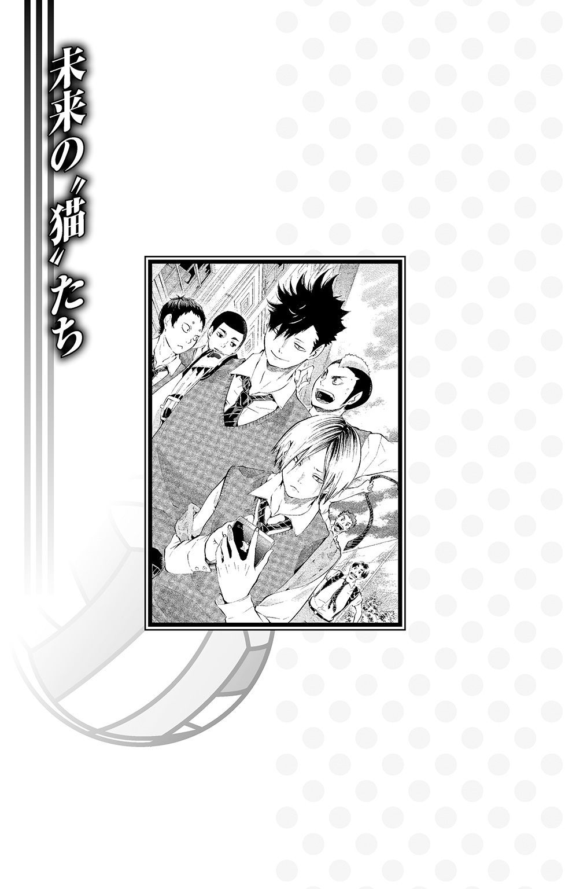

| ハイキュー!! ショーセツバン!! VI 疾れ! ルーキーズ!! | |
| 古舘春一 & 星希代子 | |
この本は縦書きでレイアウトされています。
また、ご覧になる機種により、表示の差が認められることがあります。
この作品はフィクションです。
実在の人物・団体・事件などにはいっさい関係ありません。
窓ガラスに映る横顔には、青黒い痣が残る。昨日行われた和久谷南戦での負傷だったが、澤村は終わった試合よりもこれからの試合のことを考えていた。頰はまだ熱を残していたが、今日の試合に支障はない。
「ほら騒ぐな、もうすぐバス出るぞー」
ざわめくマイクロバスの車内で、主将の澤村は軽く腰をあげて部員たちの様子を確認した。調子の悪そうな者、ふだんと様子の違う者はいない。今日も大丈夫だ。
10月25日から三日間にわたって行われた、全日本バレーボール高等学校選手権大会、宮城県代表決定戦も今日が最終日だった。型破りのプレーで翻弄してきた条善寺、熟練のコンビネーションと〝小さな巨人〟さながらの空中戦を見せた和久谷南、そして準決勝であたった因縁の相手青葉城西と、烏野高校排球部は強豪相手に勝利をつかんできたのだ。どの試合も激戦で、烏野の辛勝とも言えた。綱渡りでもするように勝ち進み、ついにたどり着いた決勝の相手は天才牛島若利率いる常勝の王者、白鳥沢学園だった。
「全員揃ってるか？」
声をかけると「あれっ」と、日向の素っ頓狂な声が返ってきた。
「谷地さんがいません！」
「え？」
確かに、車内に谷地は見当たらない。先輩マネージャーの清水も「さっきまでいたのに......」と探している。小柄な谷地が座席や荷物の死角に潜りこんでいないかともう一度見てみたが、どこにもいないようだった。
「トイレでも行ったかな、ちょっと待つか」
そう言った澤村を、日向が心配そうな顔で見あげた。
「も、もしかして、不良にカツアゲされてたりとか」
「え？ まさか、なんで学校で......」
なにをバカなことをと思った澤村だったが、言われてみると確かに新米マネージャーの谷地にはちょっと目を離すと転がるようにアクシデントに巻きこまれていく危うさがある気もしてきて、ちょっと想像してみたが最後、どんどん心配になってくる。
「一応、部室を見てくるか。日向、ちょっと......」
澤村がそう言いかけたときだった。
「あ、大地。あそこ！」
東峰が窓の外を指差す。見てみると、外にはバスに向かって走ってくる谷地の姿があった。忘れ物でも取りに戻っていたのだろうか、段ボールの箱を抱えている。どうやらカツアゲの心配はなさそうだと胸を撫で下ろしたのもつかの間、いったいなにに蹴つまずいたのか谷地がビタンと転んだ。
「うわ！ 谷っちゃんケガない？ 大丈夫？」
東峰が窓に張りつく。谷地の抱えていた段ボールは地面に転がり、中から黒い固まりがこぼれ落ちた。なんだろうと思う間もなく、それは風に吹かれて飛んだ。
「えっ」
心配そうに谷地を見ていた部員たちが思わず声を揃えた。窓ガラスの向こう側で倒れたままの谷地が、無声映画のように音もなく宙に手を伸ばす。
「あれって......」
「『飛べ』だ！」
「うわ、飛んでく！」
風をはらんで空へ舞いあがったのは、バレー部の横断幕だった。早朝の淡い空を覆うように横断幕が浮かぶ。急に広がった漆黒をぽかんと目で追っていた澤村が、我に返って叫んだ。
「日向、いけ！」
「ハイ！」
元気に答えた日向は、もう外へ飛び出している。
駐車場に突っ伏したまま「わたしより、横断幕をー！」と叫ぶ谷地をチラリと見て、日向は地面を蹴った。
「いいジャンプは......」
チリッと砂を踏む音を聞いたと谷地が思ったときには、日向は空を舞っていた。
「助走からッ！」
そう言ってはためく横断幕の端をしっかりとつかんだ日向だったが、そのまま強風に飛ばされそうになる。バスの中から見ていた部員たちがあわてて助けにいこうとしたが、日向はなんとか体勢をたてなおし、両足で着地した。
「あー、びっくりした！ 一瞬フワッてなった、フワッて！」
そう言って笑うと、日向は「大丈夫？」と谷地に手を貸した。
「あ、うん、転ぶの慣れてるから！ もうだいぶ強くなった、ヒザが！」
「ヒザが？」
窓越しにふたりを眺めていた菅原と東峰が「良かった良かった」と保護者のように目を細め、澤村もやっとひと安心する。これで、マネージャーを置いていくことも横断幕を忘れていくこともなく出発できそうだった。
「なにが起こるかわかったもんじゃないな......」
そしてペコペコと部員たちに謝りながら戻ってきた谷地と、席に着いてからも横断幕にからまってもがいている日向を確認すると、ようやく澤村は言った。
「じゃあ、出発！」

バスは乗り遅れる者も忘れ物もなく無事に出発したが、その車中で横断幕をたたんでいる谷地はどこかソワソワと落ち着かずにいた。試合会場となる仙台市体育館への道のりはさほど長くはない。小旅行というほどでもない県内の移動だったが、連日の道中――とくに決勝の今日、谷地にはマネージャーとしてひとつだけ気がかりなことがあったのだ。
「日向、あのさ」
揺れる座席から身を乗り出し、満を持して後ろの様子を確認した谷地がハッと顔色を変えた。
「ひ、日向、やっぱり......！」
動揺した谷地の様子に気づいた田中が「どうした！ どうした！」と後ろの席から駆け寄ってくる。そして谷地と一緒に日向の顔を覗きこみ、カッと目を見開いた。
「やっぱりゲロか！ 吐きそうなんだな！」
田中がバス中に轟く大声で叫んだ。
「え......、ゲロ？ おれなら......へーきです......よ」
日向が力なくこたえたが、その声はすっかりかすれ、目は落ち窪んで充血している。座席には真っ青な顔をしてチワワのようにプルプル震える日向が座っていた。ついさっき横断幕を取り戻したときの晴れ晴れとした面影はもうない。
谷地が心配していたのは、まさにこれだった。日向が移動時に車酔いしやすいことは、バレー部マネージャーとして見過ごすわけにはいかない一大事だったのだ。谷地は「大丈夫かー！」とガクガク日向を揺さぶる田中に言った。
「田中先輩、大丈夫です！ 席に戻ってください！ ここは私がなんとかします！」
「そ、そうか？ まあ、なにかあったらすぐ俺に言え！」
「ハイッ！」
これから試合を控えた先輩に負担をかけるわけにはいかない。部員の健康管理はマネージャーの仕事なのだ。谷地は覚悟を決めて日向に声をかけた。
「大丈夫？」
「へーきへーき、ぜんぜんへーきです」
しかしそう言って笑ってみせた日向の首は、バスの揺れるがままにガクンガクンと揺れ続けており、どう見ても平気そうではない。
「嘔吐は体力を消耗するし、脱水症状を起こすこともあるとか......」
谷地の言葉に、山口も通路を挟んだ隣でぐったりとへたりこんでいる日向を心配そうに見た。
「決勝前に、ゲロに体力を奪われちゃたまったもんじゃないよな」
「うん、でも吐くって決めつけて、周りが心配しすぎちゃうのもいけないのかもしれないし」
「だけど一次予選のときも吐いてたし、常習犯だからなー」
山口と谷地の陰鬱な会話に割って入ったのは月島だった。
「それ、もう条件づけされてるんじゃないの？」
窓枠に頰杖をついたまま意地悪そうに笑う月島を、顔面蒼白の日向が「な......なんだよそれ」となんとか睨む。
「だからパブロフってこと」
「ぱ......？ って......だからそれがなんなんだって聞いてん......うッ」
あわてて口を押さえた日向に「飲んで！」と用意していたペットボトルを差し出し、谷地が立ちあがった。
「前のほうに乗ると酔いにくいって聞いたよ！ 席替わろうか？ 一列だけだけど、少しでも前のほうが......」
「む、むり。うごいたら、出ます......」
日向は片手で自分の口を、もう片方の手で前の座席の背をつかんだままピクリとも動かず、もはや瞬きもしない。刻一刻と決壊の時が近づいているのが谷地にもわかった。離れて座る部員たちの視線も日向に集まり、車内に張りつめた空気が広がる。
いったいどうすれば......。
谷地は考えた。さっきも田中に「なんとかします」と言ったのだ。部員の安全を預かるマネージャーとして、この緊急事態にただ手をこまねいて見ているわけにもいかない。
こんなとき、先輩なら......。
すがるように隣の清水を見ると、清水は顔色も変えずサッと自席の窓を開けながら言った。
「仁花ちゃん、空気入れ替えてあげて。あと袋用意して」
「は、ハイッ！ ......窓！ 影山くん！ 窓開けて、窓！」
谷地の大きな声に驚いて、それまで日向の隣でぐっすりと眠っていた影山が窓ガラスにゴッと頭をぶつけて目を覚ました。
「......う、あ？」
寝ぼけ眼でぼんやりとよだれを拭いていた影山だったが、隣の日向と目が合った途端、素早く危険を察知して窓を開けた。
「日向ボゲ！ ここで吐くな！」
スポーツドリンクをすするようにひと口飲んで、日向がぺこりと頭を下げた。
「どうもお騒がせしました......」
あちこちの窓から入ってくる秋風のおかげか、冷たいスポーツドリンクのおかげか、最悪の事態は間一髪のところで食い止められた。日向は持ちこたえたのだ。
「よかった......」
ようやく人心地ついた谷地だったが、しかし日向の問題が根本から解決したわけではなかった。まだ終わってはいないのだ。
すぐに難しい顔に戻ってなにやら考えこんでいた谷地だったが、再びひょこっと通路に顔を出すと、後ろの席でまだいくぶん青い顔をしている日向に提案してみた。
「あのさ日向、今度は家を出る前に酔い止めでも飲んでみたらどうかな？」
「酔い止めかあ......」
腕を組んで考えこんだ日向の代わりに、山口が言った。
「酔い止めって眠たくなるから試合前はどうかな。それに日向のゲロは車酔いっていうより緊張かもね」
「そっか、東京に行ったときとかはもどしてないもんね」
山口と谷地の話を聞いていた月島が、小馬鹿にしたように日向を見た。
「現金なやつ」
「なっ......、おれのは繊細っていうんですー！」
わざわざ立ちあがって言い返す日向を制しつつ「元気になったってことかな」と複雑な表情を見せた谷地だったが、ハッとなにかに気づいたようにパチンと手を叩いた。
「わかった！ 催眠術とかで暗示をかけて楽しい気分にさせれば......」
「谷地さん、それちょっと怖い、かな......」
山口はおずおずとそう言うと、スマホを取り出して催眠術の代替案を調べだした。
「緊張をほぐすツボとかないのかな、吐き気止めのツボとか......」
その画面を通路ごしに覗きこんで、日向が心配そうに訊く。
「......ツボ？ 間違えて下痢ツボ押したりしないよな」
「な、なんで？ 押さないよ......っていうかなにそのツボ......」
うろたえ合っている山口と日向を、月島が冷たい目で見下ろした。
「きみたちさ、もう少し静かにできないわけ？ 小学生の遠足じゃないんだから」
「前に人の下痢ツボ押したの月島だろ！ 体育館で！」
日向がムキになって立ちあがったが、月島は「なに言ってんの？」と目をそらしてヘッドフォンで耳を塞いだ。その隠れた耳に、日向がむなしく叫び続けた。
「月島なーおまえなー、それ取れよなー！」
「......さっき、ちょっと静かになったと思ったんだけどな」
日向たち１年生の後ろに座っていた澤村がため息をついた。よくもまあ今年はこんなにも問題児ばかり揃って入部したものだ。教頭に目の敵にされるのもしかたないかもしれない。いや、今年の１年だけ特別なわけじゃないのかもしれない。２年もうるさいし。
そう思って後ろに座る２年生を見ると、彼らは白鳥沢にチアリーダーがいるかいないかで言い争っている。
澤村はもう一度ため息をつき、俺たちも１年の頃はこうだったのだろうか......いやいや、そんなはずはない、たぶん......などと考えていたが、ふと前方で繰り広げられている不毛な言い争いのなかにめずらしく影山の声がないことに気づいた。
「まさか影山まで車酔いってことは......」
少し心配になり座席のすき間から様子をうかがってみると、当の影山はバスの揺れるがままにゴツンゴツンと窓に頭をぶつけながら、悠々といびきをかいて寝ている。
「さっき起きたと思ったら、もう爆睡か」
「こいつらって、なんかこう決勝戦前の緊張感とかないのかな」
どこかうらやましそうにつぶやいたのは東峰だった。烏野のエースは、まさに決勝戦前の緊張で脂汗を流している。もう恒例となったエースの緊張を解くように、菅原が笑った。
「みんなふだん通りってことで、いいじゃないの！」
「確かに、いきなりいつもと違っても心配だけど......」
「だべ？ 日向がやけに神妙にしてたら、逆に心配になるって」
菅原の言葉に、固まっていた東峰の表情も少し緩む。
「......まあ、妙に熱い月島とか、どう対処していいかわかんないけどさ。笑顔の影山とか」
「そうそう、山口がひと晩でマッチョになってたら、なんて声かけていいかわかんないべ？」
東峰が吹き出し、隣で聞いていた澤村も思わず笑った。
「スガ、なんで山口だけ体が変わってるんだよ」
そのとき、先輩たちの会話に自分の名前が出たことに気づいた山口が、「え、なんですか!?」と振り返った。
「悪い、山口。なんでもないんだ」
そう言って、３年生たちがさらに笑う。
言い争う者、あわてる者、笑う者、騒がしいマイクロバスの後部座席で、縁下がひとりつぶやいた。
「先輩たちもいつもと変わらないですけど......」
同じ頃――
ひとり暮らしの狭い玄関で、車の鍵を取ろうと手をのばした男が鏡に映った人影に息をのんだ。
「.........！」
目深にかぶった野球帽に、サングラスとマスク。鏡に映る不審者は、明光――月島の兄だった。
「なんだ、俺か。泥棒が入ってきたのかと思った......。これやっぱりマスクのせいだよな、でもマスク取ったらすぐ俺だってバレるし......」
弟の言う「来てくれなくてもいいから」が「絶対来るな」を意味することはもちろんわかっていた。しかし烏野のユニフォームを着てプレーする弟をこの目で見たい、応援したいという気持ちは抑えられず、変装して仙台市体育館へ向かうことにしたのだった。
「うわ、もうこんな時間か」
あわてて玄関を出た明光が、階段を駆け下りていく。サングラスの下に隠れた緊張の面持ちは、弟に見つかるかもしれないという不安からだけではなかった。自分の手で白鳥沢を倒して全国の舞台オレンジコートへ行く――。それは烏野高校排球部で万年補欠だった、明光自身の夢でもあったのだ。
さらに同じ頃――
仙台駅の地下鉄南北線ホームで、ふたりの少年が揉めていた。
「コージー、これ反対行くやつ！」
「あ？ 体育館行くのって富沢行きだろ？」
「そうそう、これ乗ったら逆行く！ 翔ちゃんの試合、遅れたらヤバいって！」
「え、マジか」
土曜の混み合ったホームで立ち止まる彼らを、並んでいた乗降客たちが睨む。
ふたりは泉と関向、日向の雪ヶ丘中学時代の同級生だ。バレー部のない中学で、バレーへの思いを諦めることなくひとり努力し続けた日向の背中を三年間見てきた友人であり、日向の出場した初公式戦では数合わせの助っ人ながら一緒に戦った仲間でもあった。
反対ホームにやってきた富沢行きの地下鉄に乗りこむと、ふたりは少し安心したように顔を見合わせた。めざす仙台市体育館は終点で降りてすぐだ。
「翔陽、１年でいきなりレギュラーだもんな」
「中学なんてバレー部なかったのにね」
「今日勝ったら全国だし、すごいよな。で、どうよバスケ部のほうは」
「俺のことはいいじゃん！ 来年こそレギュラーめざすからさ。で、コージーこそサッカー部はどうなのさ」
「......まあ、今日は翔陽の応援に集中」
つり革につかまったまま苦笑いしたふたりは、どちらからともなく携帯を出して日向からのメールを見た。日向とのやりとりは、毎日の厳しい練習を物語るように少なく、短い。
「俺も頑張んなきゃな」
携帯を見てつぶやいた泉が、顔をあげて路線図を見る。
「あ、次だ」
「よーし、待ってろよ翔陽！」
「え、なんかコージーが翔ちゃんと戦うみたいになってるけど」
「そうか？」
旧友の晴れ舞台を前に期待と緊張にあふれたふたりの顔が、ドアのガラスに映っていた。
仙台市体育館に到着したマイクロバスから、烏野高校排球部が降りる。連日通った会場――大会三日目の体育館を目にして、澤村は胸のつまるような思いがした。
６月のインターハイ予選では、最終日に会場へ来ることはできなかった。それ以前はずっと、公式戦のたびに一日目だけしか訪れることのできなかった仙台市体育館へ、ついに最終日に足を踏み入れる日がきたのだ。
はやる気持ちを顔には出さず、澤村は部員たちに向かって静かに指示を出した。
「荷物おろすぞ」
「ウス！」
ボール、救急箱、横断幕――。揃いのジャージを着た部員たちが、それぞれ荷物を手に会場へ向かう。最後にもう一度車内を確認してからバスを降りた澤村の耳に、聞き慣れた女子の声がした。
「応援来たよ！」
振り返ると、手を振っているのは女子バレー部元主将の道宮だった。引退した他の３年生も一緒だ。昨日までは授業で来られなかった女バレの部員たちも、土曜の決勝には駆けつけてくれたのだ。
「ていうか顔!? 痣！」
澤村の痣に気づいた道宮が驚いて駆け寄る。
私服で現れた女子の先輩たちに一瞬ざわめいた１、２年生男子が、気を利かせた菅原に「ほら、みんな行くぞー」と追い立てられ、どこか名残惜しそうに体育館へ向かう。
「あの！ それで、コレ!!」
道宮のひときわ大きな声に、山口がつい振り返った。そして後ろで繰り広げられていた光景を見て固まる。
女バレの先輩が、主将になんか渡して、真っ赤で......。
「お守りだ！」
思わず叫んだのは隣にいた日向だった。
「あんま見ちゃダメだって」
そう言って日向の口を塞ぐ山口の顔は、なぜか道宮以上に赤い。
「見てないって！」
「なんで噓つくわけ!?」
妙に高ぶるふたりを軽蔑するように一瞥した月島が、ボールの入ったカゴを押して通り過ぎる。
「待ってよツッキー！」
あわてて追いかけた山口が「いてッ！」と立ち止まった。仁王立ちになっていた影山にぶつかったのだ。
影山は、主将と元主将ふたりのやり取りをなんら恥じることもなく不躾に眺めていた。
「............」
無言でじっと主将たちを観察し続ける影山を「来いって！」と体育館の入り口まで引っ張り、日向がたしなめる。
「おまえな、ああいうアレは、そうやってジロジロ見たらダメなやつなんだぞ！」
「......あれの中には、なにが入ってるんだ？」
「あれって、お守りのことか？」
「お守りがあると、勝てるのか？ なにが入ってるんだ？ 疲労回復するやつが入ってるとかか？」
お守りをなんだと思っているのか、必死に首を伸ばす影山に日向があきれて言った。
「おまえ、本当にバカなんだな」
「なんだと!?」
影山の眉間にみるみる浮き出た深いシワに気づき、日向が逃げだした。
「待て！ 日向ボゲ！」
ふたりの爆走追いかけっこを止める部員はもはやいない。道宮たちと別れて仲間のもとへ合流した澤村も、駆け回るふたり――逃げる日向と追う影山に気づくと情けなさそうに空を仰いだ。
「あいつらまた喧嘩か、仲良くしろとは言わないがせめて決勝の前くらい......」
あきれる澤村に近づいて、菅原がニヤリと笑う。
「まあ、大地のせいなんだけどねー」
「え。俺？」
キョトンとする澤村の両隣を固めた菅原と東峰が、鈍い仲間の背中をベチベチ叩きながら連行するように体育館へ入っていく。
「な、なんなんだよおまえら......」
ニヤニヤ笑う仲間に連れられて会場に入った澤村のもとへ「大地さん！」と田中が駆け寄ってきた。
今度はなにがあったのかと身構える澤村に、田中は息せき切って伝える。
「あいつら来てるんスよ！ 中学の、日向と影山の試合の！」
「......もう一回、順番に頼む」
「えーと、だから、日向の......」
つっかかりながら話す田中の話を理解すると、澤村は「ああ、あのときの」と日向と一緒にいる私服の少年ふたりを見た。そして去年見に行った中学総体の予選を思い出す。中学生ながら安定感のあった優勝候補北川第一中と初心者の寄せ集めのようだった無名校雪ヶ丘中の試合を――。
「おい、もたもたすんな！」
影山に怒鳴られた日向が友人たちに手を振って駆けだし、合流する。
あのとき、それぞれまったく違う条件の中で必死に戦っていた中学生ふたりが、まさに今から常勝の王者白鳥沢に挑むのだ。
体育館に入ると音が変わる。大部分が白鳥沢の応援で占められた観客席のざわめきが、高い天井で反響して全身に振りかかってくる。はじめからわかっていたアウェーに今さらなにを思うこともない。ただ全力で相手に挑むだけだ。澤村は小さく深呼吸すると、コートに足を踏み入れた。
そこは、初めてのセンターコートだった。
いつか、先輩たちも立った決勝の舞台だ。
ついに立ったセンターコートで澤村の目に入ってきた景色、それは緊張のあまり腹を抱えてトイレを探す日向と山口、センターコートに感動して仁王立ちになる影山、観客席に兄を見つけて睨む月島の姿だった。
「まったくこいつらは......」
１年生の誰もが見事に落ち着きなく、逆に頼もしくなるほどふだん通りだった。目の前でつんのめって転びかける日向に「ほら、気持ちだけ空回りするなよ」と声をかけながら、しかし澤村は思った。
俺たちが１年のときだって、空回りしているだけだったじゃないか――。
「目指せ、全国優勝だ！」
澤村たちが１年生の頃、当時の主将はそう言い続けていた。
全国大会の試合を見て烏野に入学した澤村は、もちろんバレー部に入部した。あの日見た彼らのように、自分もあのユニフォームを着て活躍する日がくると思っていたのだ。
その期待はすぐに消えた。
名将烏養監督が引退した後、烏野には経験のあるコーチは在籍せず、他校との練習試合すら組んでもらえない弱小校となっていたのだった。
落ちた強豪、飛べない烏。
誰からも期待されない報われない日々がいつまで続くのかという不安のなか、リアリティを持たない主将の言葉はいつの日か耳を通過していく形だけの目標になってはいなかっただろうか。
入部したときは、テレビで見た「あの烏野」でプレーできるのだと期待していた。でもそれは間違いだった。完成され、すべてがお膳立てされたチームなんていう都合のいいものはない。自分のチームは自分でつくらなければいけなかったんだ――。
澤村は先輩たち、顧問の先生たちを思い出した。そしてコートに立つ仲間とマネージャーたちが観客席に張った横断幕を見る。
――飛べ
「あの烏野」も掲げていただろう横断幕だ。
今、目の前にいる仲間たち。このチームは「あの烏野」ではない。「俺たちの烏野」だ。俺たちは、三年目にしてようやく自分たちのチームをつくれたのだ。
「狙うのは、全国大会優勝だ！」
昨日、部員たちの前で言った言葉を思い出す。澤村の目標を聞き流しているチームメイトなどいなかった。部員全員が同じ目標に向かって進んでいるのだという確かな手応えがあった。それはなんと贅沢なことなのだろうか。
新しい烏野は騒がしく落ち着きなく、教師にまで目をつけられた問題児ばかりかもしれない。でもこれが俺たちの烏野高校排球部だ。
コートの中では、手のひらに「人、人、人......」と書いて震えているエースの東峰を、菅原がケタケタと笑い飛ばしている。二年前、一緒に入部したふたり――ともに、地に落ちたと言われたチームで辛酸をなめたふたりが、今も揃ってコートにいてくれることを澤村はうれしく思った。
そして田中、西谷たち２年と、春に比べて心身ともにずいぶん成長した１年生たちを見て思う。おまえたちも、これから自分たちのチームをつくっていくのだと――。
そのとき、悲痛な叫び声がした。
「チアだ!!」
「うらやましいいいい！」
田中と西谷の下世話な慟哭に感傷的な気持ちも吹き飛び、「騒ぐな！」とたしなめたとき、ネットの向こうに対戦相手が現れた。
白鳥沢学園だ。
待ちわびた王者の登場に、観客席が沸き、空気までが震える。
「来たな......」
烏野の部員たちが好奇心と恐れの混ざった目で見守るなか、白鳥沢のウォームアップが始まった。
目で探し、追うのはエース牛島の姿だ。
ふわりと高くあがったボールに牛島が飛び、打った。
「......え？」
床を震わせて跳ねあがったボールは、観客の頭上を軽々と越えて二階席へ飛びこんだ。
これまで見たこともなかった光景に、観客が、烏野のベンチが固まる。圧倒的な力の前で、澤村もただボールの軌道を追うことしかできなかった。
わかっていたことだった。相手は県内一どころか、全国で三本の指に入るアタッカーだ。一対一なら、烏野の中に敵う相手はいないだろう。でも、バレーは六対六の勝負。チームでなら敵わない相手じゃないはずだ。
この烏野なら――。
白鳥沢の練習が終わった。道宮から受け取ったお守りをベンチに置くと、澤村は部員たちを率いてコートに入った。
観客席を埋める白鳥沢のチアリーダーと応援団、ブラスバンド――相手チームへのコールが続くなか、田中が後輩たちに声をかけるのが見えた。
「......おいおまえら、昨日のアレやったれ」
呼びとめられた日向と影山がピンときた顔で頷き、田中が不敵に笑う。
ボールが弓なりにあがった。
日向が踏みきり、影山がネットのほぼ真上にトスをあげた。
その直後、相手コートのアタックライン付近――ネットの真下でボールが跳ねた。
なにが起きたのかと会場がしんと静まる。
その一瞬ののち、観客席が沸いた。
「速っ！」
「今、セッター球触った!?」
昨日の対青城戦で偶然生まれた速攻だ。
未だ牛島たち白鳥沢の影響下にあった場内を、日向と影山、１年生コンビの新たな武器が切り裂いたのだ。
歴戦の王者が、驚愕の面持ちで挑戦者を見やる。
一瞬で雲ゆきの変わった場内を見あげて、澤村が苦笑する。
「......頼もしいよ、ウチのルーキーたちは」
じきにホイッスルが鳴る。烏野高校対白鳥沢学園。全国への切符を賭けて、今、最終戦が始まろうとしていた――。
Shimmer Tsukky
AND THE PHILOSOPHER'S BALL
ＰＡＲＴ １「魔法魔術学校」
クロウ通り８１９番地、静まり返った早朝の住宅街にかすかに羽の音がして消える。降り立ったのは一羽のフクロウだった。くちばしにくわえられているのは、一通の手紙。手紙の裏側には、紋章入りの黒とオレンジのロウで封印がされていた。フクロウが８１９番地の郵便受けに手紙を差し入れようとしたそのとき、玄関のドアが開いた。
「なにこの不法侵入鳥、保健所に連絡しようか？」
家の中から現れたのは、丸眼鏡をかけた背の高い少年だった。寝起きなのか、不機嫌そうな顔でフクロウを睨む。少年の冷たい眼光に身の危険を感じたフクロウは、大きな羽で静かに風を切り、早朝の空へと飛び去っていった。
「なんで朝にフクロウがいるわけ？ 気持ち悪い」
少年は地面に落ちていた手紙を拾うと、封も開けずに玄関のくず入れに捨てた。そして家に入って階段をのぼると、自分専用の広い子供部屋に向かう。
真鍮のノブをまわしてドアを開けた少年は息をのんだ。
部屋の真ん中に見知らぬ男が立っていたのだ。長身の少年よりも遥かに大きな巨体、そしてもじゃもじゃと顔を隠しているアゴヒゲ――。
面食らった少年だったが、気を取り直すと冷静に「警察呼びますから」と告げた。男が、ゆっくりと口を開く。
「......おまえ、ツッキー？」
「不法侵入者の分際で馴れ馴れしく人の名前を呼び捨てにしないでほしいんですけど」
大男は困ったように「......思ってたのと、違う」とつぶやいた。
「あなたにどう思われようと、興味ないんで」
そう言ってベッドサイドの電話に手を伸ばしたツッキーに、大男は困惑顔で訊く。
「......手紙は？」
さっきのフクロウの手紙とこの男は無関係ではないようだ。ツッキーは内心ホッとした。おかしなことがいくつもいくつも降りかかってきてはたまらない。しかしその安堵を顔には出さず、ツッキーはダイヤルを回しながら「捨てたけど」と冷たく答えた。そして、そのまま受話器の向こうの相手に話しだす。
「すいません、カラスノ警察ですか。家に不審者が......はい、そうです。８１９番地の......」
「俺はアオネ、あれはおまえ宛の入学許可証！」
アオネと名乗る大男のあわてた声に、ツッキーが「なにそれ」と目をあげる。
「バリボール魔法魔術学校のだ」
真剣そのもののアオネの顔を見てプッと吹き出すと、シマー・ツッキーは受話器を手で塞いでさもおかしそうに言った。
「はァ？ あなた、いま魔法って言った？ そんな真面目な顔して、いい大人が魔法!?」
アオネは、顔を真っ赤にして怒鳴った。
「シマー・ツッキー、おまえは魔法使いだ！ 自分の世界に戻れ！ 自由に空を飛び、幻術を使い、自在に変身する！」
フンと鼻で笑って電話に向き直り、淡々と警察に住所を伝えるツッキーの前で、アオネはつばを飛ばしながら魔術の魅力を説きつづけた。
「......そして、ドラゴンを操って悪と戦う！」
その瞬間、これまであざけるような表情を崩さなかったツッキーの目が鈍く光った。
「今、ドラゴンって言った？」
アオネが大きく頷くと、ツッキーは「すみません、気のせいでした」と言って、静かに受話器を置いた。電話が小さくチンと鳴る。アオネはなにが起きたのかわからず、急に様子の変わったツッキーと電話機とを交互に見ていた。そして、顔をあげたツッキーと目が合った。
ツッキーはくちびるの端をゆっくりと持ちあげると、さっきまでの、自分よりも背の高いアオネを見下すような目に戻って言った。
「......それ、入学してあげてもいいけど」
つづく
「だあああああッ！ ズンマゼンッ!!」
放課後の体育館に、今日何度目かの叫び声が響きわたる。１９１センチの大きな体を深々と折った黄金川の周りに「あーやったなー」と集まった先輩たちが、それぞれ顎をあげて天井を仰ぎ見た。
「落ちてこねえな」
「挟まったボール見たの、小学校以来だわ」
伊達工業バレー部員たちの頭上に広がる天井、その鉄骨にボールがひとつポコンと挟まっている。スパイクレシーブの練習中、黄金川が勢い余って跳ねあげたボールだった。
「あー！ なんであんな飛ぶんですか！ 俺だけ！」
「こう......なんていうかインパクトの瞬間に腕を引いて勢いを殺す感じでやるといいよ、スッて」
「スッ？ ......こ、こうスか？」
作並からアドバイスを受けている黄金川の肩を、主将の二口が軽く叩いた。
「黄金、アレ、あとでちゃんと取りにいけよー」
「ハイッ！ 今すぐ天井登って取ってきます!!」
二口の言葉を真に受けて、黄金川はどこから登るつもりか壁に向かって駆けだした。その襟首をグイッとつかんで青根が止める。
「なんだよー、本当に登ったら面白いじゃねーか」
ふてくされる二口だったが、無言でプレッシャーをかけてくる青根に負け「ちぇーっ」と肩をすくめた。確かに新入部員の黄金川は、あそこで止めておかないと本当になんとか壁をよじ登って落ちかねない直情型の男ではある。
「そんじゃ、もう一個ボールぶつけて落とそうぜ。いけ、パンタロン！ 天井サーブだ!!」
急に振られたパンタロンこと女川は「え、俺かよ？」などと言いながらも、少しうれしそうにボールを手に取った。
「よっしゃ......天井サーブっ!!」
女川が天井に向かってボールを打つ。ボールはスパンと小気味良い音を立てて天井へ一直線にあがっていく。
「やべー、パンタロン上手いし」
「お、近い近い、これ本当にぶつけられるんじゃねーの？」
部員全員が固唾をのんで見守るなか、女川の打ったボールは元のボールのちょうど隣にチョコンと並んで挟まった。
「ギャハハハハハハハ、意味ないし！」
床で笑い転げる二口を、青根が困ったような顔で見下ろした。
「練習......」
「わーってるって！」
二口は涙を拭いて立ちあがると、面倒くさそうに部員たちに声をかけた。
「じゃ、スパイク練習ー」
「ウス!!」
伊達工業は、県内では鉄壁のブロックで恐れられる強豪校だ。相手スパイカーの前に立ちはだかる圧倒的な壁は、点だけでなく戦意までをも相手から奪い取る。主将の二口は不真面目で適当にも見えるが攻守の要となるプレーヤーで、その実力から監督や部員たちからの信頼も厚い。３年生引退後の新チームは、さらに高く、強く、広い鉄壁をもって全国の舞台を目指すため、日々研鑽を積んでいた。
中でも部員たちからの大きな期待と不安を一身に背負っているのが、新生伊達工の鍵となるだろう大型ルーキー――天井へ最初のボールを吹っ飛ばした１年生セッター黄金川貫至だった。
「作並、黄金川！」
急に呼びつけられて、ふたりの１年生が練習の足を止めた。監督の追分が呼んでいる。作並はチラリと監督の表情をうかがってみたが、いつもどこか不機嫌そうに顔をしかめている監督の心のうちは読めない。
練習を続けているチームメイトたちが、必死にふたりのことなど気にしていないふうを装っているのがわかる。なんだろう、声が出てなかったかな、足が動いてなかったかな、それとも別のことかな......と思いながら、作並はガチガチに緊張した顔でネットをくぐってきた黄金川とともに監督のもとへ急いだ。
追分は目の前に並んだふたりを見比べていたが、作並に視線を定めると重々しく口を開いた。
「......いいか」
思わずゴクリと唾を飲みこみ叱られる覚悟を決めた作並だったが、監督から出てきた言葉は予想外のものだった。
「黄金川はまだセッターとして赤子同然だ」
頭上で黄金川が「オギャッ!?」と声をあげたが、作並は監督から目を離すことができなかった。これから、監督がなにか大切なことを言うのだとわかった。
「まずはおまえが文字通り導いてやれ、作並」
１年生リベロの作並は、やっと黄金川に視線を移した。部員たちの中ではもちろん同級生に比べても小柄な作並の身長は１６４センチ、隣の黄金川とは30センチ近い差があった。
――僕が、黄金川くんを......？
「ああ、黄金のフォローな」
練習後、部室に戻って作並から話を聞いた二口は納得したように頷いた。黄金川が得意な場所、ジャンプトスできる十分な高さであげてやれというのは至極真っ当な策だ。代表決定戦までの短期間で技術のない黄金川の高さを最大限利用するには、作並のほうが黄金川に合わせるほかない。
汗に濡れたＴシャツを着替えながら「そうなー」となにか考えるようなそぶりを見せた二口だったが、ロッカーを閉めるとイタズラでも思いついたようにニヤリと笑った。
「じゃあおまえらさ、息合わせるためにずっと一緒に行動したらいいんじゃね？」
「えーっ!?」
驚く作並を見て「また二口が適当なことを......」と、２年の小原が苦笑する。
「適当じゃねーって。これからは便所も一緒な、これ主将命令」
「なんでですかー!?」
あわてる作並の隣で、シャツからポンと顔を出して着替え終わった黄金川が生真面目に頭を下げた。
「ウス！ ついていきます！」
「え......ちょっと黄金川くん、本気？」
対照的な１年生ふたりのリアクションに「おい二口、まーた黄金が真に受けてるぞー」と女川がニヤニヤ笑う。
「なんだよパンタロン、俺はいっつも真面目だっつーの」
「どこがだよ」
「いつもだよ」
ふざけてにらみ合う先輩たちから逃げるように、着替え終わった作並が部室のドアへ向かった。
「お、お先に失礼しますっ！」
足早に帰る作並を、スポーツバッグを肩に引っかけた黄金川があわてて追いかける。
「あーっ、ちょっ、待って！ 一緒に帰らないと、主将命令なんで！ 作並くんっ！」
扉が開くと、人いきれのしていた部室に夜の冷たい風が吹きこんだ。汗を冷やす間もなくバタンと乱暴に閉まった扉の外から、「えーっ！」という作並の困惑した声が聞こえて、部員たちが笑う。
椅子にダラリと腰かけた女川が、どこからか取り出したパンをほおばって二口を見た。
「黄金のやつ、真面目だけどバカだからなー」
「でもタイミング合わせるのは大事だろ、実際」
そう言った二口の表情は、さっきまでと違って少し真剣に見えた。もしかして作並と黄金川へのアドバイスも、冗談めかしてはいたがいくらかは本気だったのかもしれない。部室の隅で青根も小さく頷いている。しかし小原は心配そうにつぶやいた。
「でも黄金のことだし、明日から本当に便所まで追いかけるんじゃないか？」
「............」
小原の懸念に青根が少し顔を曇らせ、部員たちの口数も少なくなる。そして部室の外から虫の音が聞こえてきた。秋だった。
チャイムが鳴り、二時間目の授業が終わった。次の授業は二時間続けての実習だ。クラスメイトたちが、昨夜見たテレビの話などしながらどんどん作業着に着替えていく。いつもなら楽しみな実習だったが、作並はざわめく教室の中でなかなか席を立てずにいた。
もし廊下に出たら、また黄金川くんが待ち伏せしてるかもしれない......。
不安を覚えるのもしかたがない。今日、作並は朝からずっと黄金川につけ狙われていたのだった。
そのストーキングは学校前でバスを降りて停留所にジャージ姿の黄金川を見つけたときから始まっていた。
「あれ、黄金川くんおはよう。ここで会うの珍しいね」
気さくに声をかけた作並は、返ってきた言葉に息をのんだ。
「ハイ！ どのバスで来るかわかんないから、ずっと待ってたんス！」
「......え？」
ずっと？ ずっとって何時から？ 今日はちょっと早く来たから、今だってまだ７時だよ？ いったい何時から待ってたの？ いちばん早いバスだってほんの数本前だよ？
疑問が山ほど浮かんだところで、昨日主将が言った「これからは便所も一緒な」という言葉を思い出す。
二口さんのせいだ......。
頭に浮かんだたくさんの疑問を、作並はぐっと飲みこんだ。
もし訊いて「５時から待ってたっス！」などと言われたらどんな顔をしていいかわからなかったし、正直少し怖い。
しかし作並はすぐに、怖いなどと思った自分を恥じた。
黄金川くんは練習熱心なだけなんだ。昨日、監督や二口さんにいろいろ言われて、今日から早速実践してるんだもんな。僕も見習ってもっと頑張らなくちゃ。これから代表決定戦までいつもより頑張って練習して、チームを全国に導けたらいいな――。
作並は前向きに気持ちを入れ替えると、忠犬のようにじっと待っていた黄金川に声をかけた。
「じゃ、行こう。今日も朝練頑張ろうね、黄金川くん」
「ウス！」
しかし作並の前向きな気持ちは、再び恐怖に塗り替えられることとなる。
一時間目が終わった後の休み時間だった。廊下へ出ようと教室のドアを開けた作並の前に、覆い被さってくるような大きな影がゆらりと現れた。
「えっ、なに？」
とっさに飛び退こうとした作並の両肩が、廊下から伸びてきた大きな手にガッシとつかまれる。
「ヒッ！」
「待ってたッス、作並くん!!」
この明るい声――顔の上半分はドア枠の外にはみ出していて見えないが、確かに黄金川だった。
「......黄金川くん!? ど、どうしたの......あ、辞書忘れたとか？ 貸すよ？ 返すの明日でいいからさ。僕、帰ってもあんまり勉強しないし......」
驚きのあまりよけいなことまで口走っているあいだに、黄金川は少しかがんで教室に頭を入れ、言った。
「いや、俺トイレ行きたくなって！ で、作並くんに一緒に行ってもらおうと思ってたんス!!」
「は？ トイレ？」
今、黄金川くんがおかしなことを言ったような気がするけど、僕の聞き間違いだったらいいのにな。っていうか手を離してくれないかな。などと思いながら、作並はもう一度訊いた。
「......ええと、トイレに一緒に行こうって言った？」
「ウス。だって、ひとりで行ったら主将に叱られるじゃないスか」
「ちょっ......先輩たちだって見張ってるわけじゃないし、そんなことで怒らないよ！」
教室の出入り口をひとつ塞いで騒いでいるバレー部のふたりを、クラスメイトたちがなんだよ邪魔くせーなという顔で見ていく。
作並は「あ、ごめん」と移動しようとして、ふと思いとどまった。廊下に出てしまうと、そのままなし崩し的にトイレまで行くことにならないだろうか。いや、トイレくらい一緒に行けばいいんだろうけど、でも、これから毎回こうやって迎えにこられても困るし、怖いっていうか。あれ、でもなんで困るんだっけ？ なにがこんなに怖いんだっけ......？
これまで経験したことのない状況に困惑する作並だったが、つづく黄金川の言葉を聞いて自分の中に渦巻く違和感の正体に気づいた。
「いやー、怒られないとしても、ボールのタイミングとかわかり合いたいんで！」
「トイレとボール関係ないよ!!」
そうだった。一緒にトイレへ行ったからってバレーが上手くなるわけがない。それだけのことだった。どうしてそんなことがわからないんだろう。なんて言えば傷つけずに伝えられるんだろう。作並が悩んでいると黄金川が口を開いた。
「作並くん......ちょっといいスか」
「え？」
顔をあげると黄金川はニコニコとしていたさっきまでとは打って変わって真剣な顔つきになっている。作並はその気迫に押されるように、一歩引いた。
「な、なにかな？」
「......俺、サーセン、そろそろギリギリなんスけど......」
「えっ？ ギリギリって......まさかトイレが!? ちょっ......それを先に言ってよ、黄金川くん！」
作並が陥落した。作並は苦悶の表情を浮かべる黄金川を自ら引っ張ってトイレへ向かうこととなったのだった。
朝から続いたこれらのストーキングに心もくじけ、作並はすっかり机から離れるのが怖くなってしまったのだった。
しかし文句を言うことはできない。黄金川は先輩たちの言うことを素直に聞いているだけなのだから――。
というわけで教室で身を潜めるようにしていた作並だったが、もうすぐ次の授業が始まる時間だった。廊下へ、外へ出なくてはならない。授業をサボるなんてことは思いつきもしなかった。
作並は教室の時計を見た。休み時間はあと５分。もう黄金川が教室にやってくることもないだろう。作並は急いで実習用の作業着に着替えて帽子をかぶると、逃げるように実習棟へと走ったのだった。
授業が始まる時間ぎりぎりに実習室に入った作並に、クラスメイトの視線が集まる。なんだろう、まだ先生来てないよね......と焦る作並に「作ちゃん、あれ......」と、同級生が顎で教室の隅を示した。
「あれ？ ......って......ええっ!?」
そこにはひときわ体の大きな男が、気の早いことにもう溶接面をつけて座っていたのだった。作並は大きくため息をつくと、男に近づいた。
「......黄金川くん、だよね」
「ウス！」
溶接面をつけたまま、黄金川がペコリと頭を下げる。
「ウスじゃないよ、なんでいるの!? 黄金川くん実習違うでしょ！」
「これかぶってたらバレないっす！」
「バレるよ！ こんな大きい人、他にいないし！」
「いや、でも......」
「でもじゃないよ！」
なんとか黄金川を追い出すと同時に教師が教室にやってきて、授業開始のチャイムが鳴る。たったの５分がものすごく長く感じられた。
作並はこのままずっと実習が続けばいいのに、休み時間にならなければいいのに......と強く祈りながら、教師の話を聞くのだった。
祈りも虚しくもちろん実習は終わって昼休み、自分の席で弁当を食べ終えた作並は危険物取扱者乙種４類の参考書を開いていた。しかしその内容はまったく頭に入ってこない。
絶対に「一緒にメシ食いましょう！」と押しかけてくると思っていた黄金川がなかなか現れないのだ。つい時計を確認しては「あと35分か......」などと思ってしまい、なんだか逆に黄金川を待っているような気になってくる。
そこでとにかくいったん黄金川のことを忘れようと乙４の参考書を開いたのだったが、自然発火の機構を覚えようとしても教室の出入り口が気になってしまい、人が出入りするたびにドアを見てしまう。
教室を出たほうが気が楽かな。ううん、黄金川くんを相手に逃げ隠れするのはたぶん悪手だ。ここにいたほうがいい。逃げても追われるだけだし......熱量の固まりみたいな黄金川くんの温度を、引火点以下に下げる冷却効果のある消火剤が見つからないことには勝ち目が......。
精神的に追いつめられ、試験問題と現実の区別があいまいになってきた作並の机が急にガタンと揺れた。
「作並くーん、なに読んでんスか？」
ハッと顔をあげた作並は、目の前に作業着姿の黄金川を認めると思わず消火器を探してキョロキョロとあたりを見回した。
「なに探してるんスか？」
不思議そうに自分を見下ろす黄金川と目が合って我に返り、作並は「いや......」と顔を赤らめて参考書をしまった。そして訊く。
「またトイレ？」
「や、用事はないけど、ただ来ただけっス」
「そっか......」
作並は軽くくちびるを嚙むと、前の席に勝手に座った黄金川を見た。
言わなくちゃ。言いにくいけどちゃんと伝えないと、このままじゃ普通に練習することだってできなくなってしまう。
「......あのさ、二口さんの言ったことあんまり真に受けなくていいと思うよ。一緒にトイレ行ってバレーが上手くなるなら、僕だってずっと先輩たちの後をくっついてるよ。だからさ、もう......」
「いや、それはわかってるっス」
黄金川の思いがけない返事に、作並はぽかんと口を開けた。
わかってる？ わかってるのにこれなの？
「わかってますけど！ でも！ ただの軽口だとしても、やってみないとダメなんス！ じゃないとみんなに追いつけないし、赤子だからって皆さんの足引っ張りたくないんで！」
椅子の背をまたいで後ろ向きに座った黄金川が、机につばを飛ばしながら喋るのを作並はジッと見ていた。
そうだった、黄金川はいつだってずっと、それこそ赤ん坊みたいに真っすぐ一生懸命だったのだ。意味がないとわかっていることを、でももしかしたらと一縷の望みをかけて試してみるだけのやる気が自分にあっただろうか――。
作並はうつむいたまま言った。
「......ごめん、ずっと邪魔とか怖いとか思ってて」
「えっ、マジすか!? 邪魔って!!」
大げさにのけぞる黄金川にもう一度「ごめん」と頭を下げると、作並は立ちあがって時計を見た。昼休みはあと30分近くある。
「じゃあさ、これから体育館で練習しない？」
「マジすか！」
飛びあがるように椅子を立った黄金川は、周りの椅子や机にガツンガツンぶつかりながら教室を飛び出していく。作並はその机をいちいち直して黄金川を追うと、訊いた。
「黄金川くんさ、昼休み一緒にごはん食べようって来るのかと思ってた」
「あー、４時間目からずっと寝てて、さっき起きたんス」
「......そっか......ていうか、黄金川くんなんでずっと作業着なの？ そのまま練習するの？」
「え？ だってどうせ午後も実習っスから」
そういえば黄金川くんの制服姿ってあんまり見たことないもんな、と思いながら作並は階段を駆け下りていった。
いつの間にか作業着の上半身を脱ぎ、袖を腰で結んだ黄金川がうれしそうにボールを掲げる。
「よーっし!! やるぞーっ!!」
いきなり体育館に轟いた大声に、制服のまま一対一をして遊んでいたバスケ部員がギョッとして振り返る。作並があわててペコリと頭を下げると「ドッセーイッ！」という叫び声と、続いてギャンッと金属になにかがぶつかる大きな音がした。
「え？」
見れば、黄金川の立つエンドラインの逆サイド、二階の廊下にボールが乗っている。二階の窓を割ろうと狙ったのでなければ、たぶんサーブの練習をしようとしたのだろう。
「......ずいぶん飛んだね、昼寝したから力があり余ってるのかなあ」
声をかけると、新しいボールを取りに走った黄金川は思い詰めた顔で作並を見た。
「......いっそ、数日寝ないほうがいいスかね」
「眠ってよ」
持ってきたボールをバチンバチンと床にバウンドさせ、真剣に「そっかー、やっぱ寝なきゃダメっスよねー」などと言っている黄金川を見て、作並は少し不安を覚えた。
僕が、導く......？ この黄金川くんを、僕が......？ なんか僕のほうが引きずられそうだけど......。
赤子というか、力のあり余ってはちきれそうな大型犬を手なずけねばならない自分の立場にやっと気づいて、作並は必死に練習へと舵をきった。
「......ていうか！ せっかくふたりなんだからトス練しようよ！ 僕も黄金川くんがトスあげやすい場所に返せるようにしたいからさ。黄金川くん、まず僕にボール投げ......」
「じゃあ、ツーアタックの練習しましょう!!」
作並の言葉を吹き飛ばすような大声を出すと、黄金川は「こうやって！ こうやって！ あーかっこいいよなー、ツーアタック！」とひとりドタバタ跳んでいる。
「黄金川くん、ツーはまだ......」
「えー、なんで！ 絶対マスターしたいッス！ ツーアタックかっこいいっス!!」
「いや、気持ちはわかるけど、まずは基本からさ、ね？」
飛び跳ねる黄金川を一生懸命落ち着かせながら、作並は野良犬と一緒に嵐の中へ放りこまれたような心細さにブルッと身を震わせるのだった。
「大丈夫かなぁ......」
黄金川がトスしやすい得意な高さ、位置を探るように、作並は何度もボールをあげた。
もっと上、もっと高く。
しばらく続けていると、黄金川は仰向けにバッタリ倒れるように寝転んだ。
「あー、もう腹減って無理ッスー!!」
「あ、そっか。昼寝してて食べてないんだっけ。もう昼休み終わるけど平気？」
心配そうに覗きこむ作並には答えず、黄金川は転がったまま訊いてきた。
「作並くん、いつからやってるンすか、バレー」
「僕？ 最初はスポ小からで......」
黄金川は「そっかー！」と大声を出したかと思うと「やっぱり経験大事っスよね......。ちょっと数十分練習しただけで赤子から成長するわけないかー」と力なくつぶやいた。
ほんの数十分、短い時間の練習とはいえ、その分だけ上達したという手応えがないと不安や鬱憤がたまるのは作並にもわかる。焦る気持ちもわかる。作並は隣に座ると、膝を抱えて言った。
「そりゃあ上達するには時間がかかるけどさ、でも黄金川くんみたいに大きいのって生まれ持った才能だし、うらやましいよ。せっかくの才能なんだからさ、三枚目の鉄壁として自信持ってよ」
「三枚目って、なんかお笑い芸人みたいじゃ......」
不満そうにゴロンゴロン右へ左へ転がっている黄金川に、作並の声もつい大きくなってしまう。
「そういうことじゃなくって！」そして続けた。「僕は背もパワーもなかったから、だからレシーブだけはって思ってずっとやってきただけだし。......でも、黄金川くんはどっちも持ってて、ウチのチームにぴったりなんだからさ！」
黄金川はぼーっと天井を見ながら話を聞いていたが、ゆっくりと体を起こすと隣で体育座りをしている作並を見た。
「鉄壁、かっこいいっスよね」
「え？ あ、うん」
あれ、僕の話聞いてなかったのかな、と思いながらも作並は頷いた。だって、確かにかっこいい。伊達の鉄壁。
黄金川も、ひとり納得したように力強く頷いた。
「うん、やっぱ、基礎と土台が大事っスよ！」
「へ......？ 土台......って、それ建築科の話かなにか？」
首を傾げる作並に、黄金川はダハハと笑ってからもう一度言った。
「鉄壁の土台っス」
作並はなにやら自信満々に胸を張る黄金川をぽかんと見ていたが、ハッと顔をあげた。
「......え？ それ、僕が......ってこと？」
「そうっス！ 土台の上に俺ら鉄壁が乗ってる感じのアレで！」
「土台の、上......？」
伊達工バレー部が誇る鉄壁のブロック。代々受け継がれてきた最強の防御にして最速の攻撃。二口と青根、そして黄金川たち三人の鉄壁を支える、頑強な土台――。
「ちょっと待って、なんか急に肩が重い感じが......」
がっくりと肩を落とした作並を見て、黄金川がケタケタと明るく笑った。その笑い声につられたように、壁のスピーカーから昼休み終了のチャイムが鳴る。
「あ、やべえ。次、実習だった！」
黄金川があわてて立ちあがり、作業着に腕を通しながら駆けだす。
「なんかこれ汗くせえ！」
騒がしいチームメイトの大きな背中を追って廊下を急ぎながら、作並は思った。
「僕が土台......」
小さく口に出してみると、食べてすぐに動いた疲れも午後の眠気もスッと消えてなくなるように心地よかった。
放課後、ジャージに着替えた部員たちが体育館に集まってくる。１年生が声をかけ合って支柱を立て、手際よくネットを張っていく。バスケのボードをあげる鎖がガラガラと引かれる。体育館が、少しずつバレー部のものになっていく。
「あっ、舞さん！ 俺、手伝いますっ!!」
鎖を引いていた黄金川が、ビブスの詰まった段ボール箱を抱えたマネージャーに突進していった。しかしマネージャーの滑津は「よっ」と手慣れた様子で箱を持ち直すと黄金川に言った。
「ありがとう、でもそんな時間あったらトス練じゃない？」
「ハ、ハイッ！ サーセンッ!!」
仰々しく敬礼する黄金川を見て、作並は運んできたカゴからボールをひとつ手に取った。
――僕が導く......か。
繫ぐこと。床すれすれからネットの上まで。
攻撃まで、勝利まで繫ぐこと。
それが僕の役目だ。
「ほら行こう、黄金川くん！ 試合まで、もう時間ないよ！」
そう言ってボールを高く放る。
「ウス!!」
オーバーで作並に返そうとしたボールは、しかしボコッとおかしな音を立てて見当違いの方向へ飛んでいった。
「あー、ごめん。少し低かったね......」
作並が頭をかいてあやまると、体育館の入り口から二口の声がした。
「おいなんだ今のー、素人かよー」
２年生もやってきた。今日もこれからキツい練習が始まる。毎日毎日、一年中、朝も夜もずっとこの体育館で練習を重ねて、みんなで新しい鉄壁をつくっていく。かけがえのないチームメイトになっていく。
Shimmer Tsukky
AND THE PHILOSOPHER'S BALL
ＰＡＲＴ ２「８と１／９番線」
ツッキーはカラスノ駅の８番線ホームにいた。入学に必要な荷物は重くかさばっていたが、それ以上に腹が立つのはアオネにもらったバリボール行きの乗車券だった。乗車券には、何度見直しても「８と１／９番線、11時発」と書いてあるのだった。
なんだよ、８と１／９って。ツッキーは不機嫌そうにあたりを見回した。
駅員に訊ねたところで無駄だろう。夢見がちな子どもの戯れ言と思われ、鼻であしらわれておしまいだ。アオネはなにも言わずにこれを渡してきたのだから、きっとどこかにヒントが、８と１／９番線に繫がるほころびがあるはずだった。ツッキーは冷静な目で、駅の構内を観察し続けた。
「あれ、きみもバリボールに行くの？」
急に声をかけてきたのは、バリボール指定のローブをまとったそばかす顔の少年だった。
「もう汽車が出ちゃうよ、急がなきゃ！ ほら！」
ローブの少年に手をつかまれたツッキーは眉間にシワを寄せたが、この少年はどうやら８と１／９番線への行き方を知っているようだった。気に入らないが、言うことをきいたほうがいい。
「ほら、行こう！ 駅構内を十周したら入り口が開くから」
ローブの少年がツッキーの手を引いて駆けだそうとしたが、ツッキーは「十周って、なにそれ」と彼の手を振り払った。駅を走り回るなんて常識ある人間のやることではない。
「......もういい、行く気失せた」
「そんなこと言っちゃダメだよ！ バリボールで魔法を覚えたら、自由に空を飛び、幻術を使い、自在に変身できるんだよ！」
「そんなのどうでもいいし」
「ドラゴンだって操れるようになるのに！」
「ドラゴン......」
ツッキーは小さく舌打ちすると、大量の荷物が載ったカートの持ち手をギュッと握って駆けだした。
混み合うホームを駆け回り、段差に蹴つまずき、人にぶつかって怒鳴られ、しばらくすると――目の前に見覚えのないホームが現れた。停まっているのは電車ではなく、古びた蒸気機関車だ。顔をあげてみると、ホームの表示板には「８と１／９」と書いてある。
同じように走り回ってここへやってきたのだろう、ホームには汗だくで倒れている少女がいた。
「大丈夫？」
一応声をかけてみると、小柄な少女は「だ、大丈夫ッス......」と言ったままピクリとも動かなくなった。しかたなく少女を抱えて汽車に乗ろうとすると、そばかすの少年もやっとホームに現れた。ツッキーはニヤリと笑った。
「きみ、足遅いんじゃない？」
「......ま、まあ、荷物が多かったからさ。ところで俺の名前はタダシ、きみは？」
汽車のデッキに荷物を押しこもうとしていたツッキーは、めんどくさそうに振り向きながら言った。
「ツッキー。シマー・ツッキー」
「き、きみが、あの......？」
タダシの目の色が変わったことに気づいて「なに」と訊くと、タダシはそばかすの顔を真っ青にして目をそらした。
「その名前を口にするだなんて、俺......、そんな畏れ多いこと......」
「僕の名前がなんだっていうのさ」
そのとき、背負われていた少女が「ギャッ」と言って目を覚ました。
「あのっ、今、シマー・ツッキーって言いました!?」
三人の乗った汽車がゆっくりと動きだした。バリボールへの旅が今始まったのだ。
つづく
条善寺高校は苦戦していた。春高バレー宮城県代表決定戦、一回戦の対戦相手は最近また名前を聞くようになった烏野高校だった。
序盤こそ型破りな攻撃で主導権を握った条善寺だったが、相手も食らいついてくる。そして烏野が見せた同時多発位置差攻撃を見よう見まねで実践して失敗、第１セットを落とした。後のない第２セット。得意の奇策奇襲も読まれだした条善寺は、焦りが出はじめたのか徐々にプレーが嚙み合わなくなっていった。
拾われ、決められ、サーブもスパイクもアウトが続く。
六人のプレーがそれぞれ空回りして、どこかでボタンをかけ違えたかのように、どうしても得点に繫がらない。閉塞した状況を打開できぬまま、点差はじりじりと開いていく――。
小さな拳をぎゅうっと握り、体育館二階の応援席で試合を見ている女子マネージャーがいた。１年生の栗林るなだ。バレー部に入って間もない彼女には、いったいなにが足りなくて点が取れないのかはわからなかった。それでも、選手たちの焦りと苛立ちだけは痛いほどにわかる。
だって先輩たちの顔が、いつもと違う。
監督がタイムアウトを要求するのが見えた。セッターの二岐が自らツーの強打。しかしボールはエンドラインを割り、ホイッスルが鳴る。互いを鼓舞し合いながらベンチへ集まる選手たちを心配そうに見ていた栗林だったが、ふと怪訝そうに目を細めた。
「......あれ？」
ベンチの様子がおかしい。監督ではなく、先輩マネージャーの三咲が選手たちの前に立ってなにか話しはじめた。コートチェンジでベンチが応援席から離れたため、その声までは聞こえないが――
「先輩、怒ってる......？」
それが何月の何日だったかは忘れたけれど、初めて夏服を着て登校した日だったことは覚えている。ホームルームで進路の話題があがっても、このあいだ入試があったばっかりなのに......と驚くこともなくなり、校則や科目をいちいち中学の頃と比べることもなくなった。高校の校舎にも授業にも、新しい先生たちにももうすっかり慣れて新鮮味はなくなったが、栗林るなは条善寺高校での日常をそれなりに楽しんでいたのだった。
その日、ある初夏の放課後、帰る準備をしようとロッカーを覗いた栗林は首を傾げた。
「あれ？」
一緒に帰る約束をしていた同級生が「るなー、どうしたの？」とやってくる。
「ジャージない」
「なにそれ、イジメ的なやつ？」
「ううん、たぶん体育のとき更衣室に忘れちゃった......んだと思う。取ってくるから、先帰ってて」
「えー、待つけど？」
「いいって、更衣室になかったら探さなきゃだし」
栗林はそう言って級友に手を振ると、まだピンと真新しい夏服の襟をゆらして廊下をぱたぱたと走っていった。
制服を着てカバンを持って出ていくのは帰宅部、ジャージや練習着で出ていくのは運動部。ちょうどたくさんの生徒で混雑する玄関と、閉める準備をしている購買前を通り過ぎれば体育館だった。閉じた鉄扉の向こうから、ボールのはずむ音とかけ声が聞こえてくる。
「よい......しょっ」
体重をあずけるようにして重い扉を開けると、ちょうどそのすき間からボールが転がってきた。
「え」
青と黄色のカラフルなボールが足にぶつかったが、誰もボールを取りにこない。栗林は誰にボールを渡せばいいものか、いやそのまま転がしておくべきなのか、そもそも中に入っていいものかどうか戸惑い、扉の前でキョロキョロしながら体育館を眺めた。
天井から吊られた緑のネットが体育館を二分している。向こう側はバスケットボール、ネットを挟んでクルクルとボールを追いかけている手前の人たちはバレー......だろうか。なんだか遊んでいるみたいだけれど、体育の時間にふざけてる男子たちとは様子が違う。もっと真剣な感じだから、たぶん部活。みんな声大きいし、ちょっと怖い。
たぶん、あの人たちのだ。
栗林は誰も取りにこない足元のボールを拾った。
しかし声をかけられる雰囲気でもなく、しかたなくそのままボールを抱えて部活の様子を見ていた。
キュキュッと靴底のゴムと床の擦れる音がするのは、履いている靴が普通の上靴と違うせいなのだろうか。もしかしたら、動き方が違うせいかもしれない。みんな全身で大きく動いていて、なんというか、ダイナミックな感じ。
「この間のインターハイ、ベスト４まで残ったんだよ」
急に話しかけられて振り返ると、いつの間にかジャージを着た女子生徒が隣にいた。
大人っぽくて、２年生か３年生の先輩に見える。
「あ、えーと、すごいですね」
栗林はとりあえずそう言ってみたが、話に聞く「インターハイ」が本当はなんのことだかよくわかっていなかった。
でもベストって言うくらいだから、きっとすごいことなんだろう。そう思って応えたのに、ジャージの先輩はどこか微妙な顔をした。
「......うん、強くなったんだ」
その顔は、自分のチームが強くてうれしいという顔ではなかった。栗林は失礼なことを言ってしまったのかもしれないと不安になり、なにかもうひとことふたこと喋らなきゃと焦った。
そのとき、ふたりの間にボールが飛んできた。速い。同時に大柄な男子が飛びこんでくる。
「邪魔ぁッ!!」
ぴょんとジャンプしてくるわけじゃなくて、顔から床に落ちるみたいに、上手く飛ばなかった紙飛行機が地面に急降下するみたいに、無謀に突っこんでくる。
「.........！」
声も出せずに固まった栗林の前で、トンとボールがあがった。そして大きな弧を描いてネットのほうへ飛んでいく。顔から落ちると思った男子も、なにをどうやったのかふわりと着地してすぐにネットへ駆け戻っていく。着地したのが先か、ボールを打ち返したのが先か、すぐ目の前で起こったことなのにわからない。
駆けていった背中を目で追い、まるでなにごともなかったかのように続いているラリーを見て、栗林はつぶやいた。
「なんかすごい......」
「興味ある？」
「え？」
「今ちょうどマネージャー募集してるんだけど、興味あるなら試しにやってみない？ 私もマネージャーなの、３年だからもうすぐ引退だけど」
栗林は急に時期外れの勧誘をしてきた先輩を見て、それからまたコートを見た。強そうな、ちょっと怖そうな男子たちがボールを追いかけて跳び回っている。髪の毛から汗が飛び散るのも見える。まだ放課後になったばかりなのにもう汗だくだ。
栗林は体育館でひとり制服を着ている自分がなんだか場違いに思えてきて、持っていたボールを渡すと申し訳なさそうに言った。
「でも、よく知らない競技なので......」
「え？ バレーだよ？ バレーボール、知ってるよね」
そう言われて、栗林はあわててもう一度コートを見た。
これがバレーボール？
「でも、体育でやったバレーはもっと人がいて......。ええと、五人？」
すかさず「六人」と訂正されて、栗林は恥ずかしくなった。人数もわかってないのに、マネージャーなんてできるわけがない。
マネージャーの先輩は続けた。
「普通、バレーボールは六人でやるの」
「じゃあこれは......普通じゃないバレーボール......ですか？」
栗林の言葉に先輩が笑った。
「これは練習。二対二で練習してるの」
バレーボールは通常六人対六人。そこを、ふたり対ふたりの試合形式で練習することによって、ひとりひとりが対応する範囲とパターンを広げ、積極的にボールを追い、自発的に攻撃をしかけていくチームにしていく、という説明だった。しかし、跳び、転がりながらボールを追いかける部員たちの姿はちょっとふざけて遊んでいるだけのようにも映る。
「近所の子どもが、いつもこんな感じで遊んでます」
正直にそう言うと先輩はクスクス笑い、それからまたさっきの微妙な顔をした。
「うん。ここは、この子たちの遊び場だから」
「遊び場......？」
栗林はとくに運動音痴というわけでも体を動かすのが苦手というわけでもなかったが、これまで運動部に所属したことはなかった。それなのにどうして入部したのかと訊かれたら、なんだかよくわからなかったから断りようがなかった、としか答えようがない。それにマネージャーの先輩から、もう少し話を聞きたい気がしたのだ。
みんな一生懸命頑張ってるのにそんな理由で入部していいのかわからなかったけれど、先輩も「試しに」と言っていたし、あまり深く考えずに入部届を出してマネージャーになってみたのだった。
思い返してみれば、学校にも慣れてきてちょっと新しいことをしてみたくなったのかもしれないし、初めての夏服に少し気持ちが浮ついていただけかもしれない。でもだからといって、自分の選択を後悔しているわけでもなかった。
入部してみると「試しに」だなんて悠長なことは言っていられなかった。
マネージャーの仕事は、部費の管理や道具のメンテナンス、体育館を使うローテーションの調整、スコア記録、練習時間の計測に、ボール拾いやボール出しなど、雑務から練習のサポートにまで及んで息をつく暇もない。
もちろんルールもしっかり覚えなくてはいけない。わからないことはたくさんあったけれど、マネージャーに誘ってくれた３年の三咲がなにかとフォローしてくれて、毎日ギリギリなんとかなっていた。
それらの真っ当なマネージャー業に加えて、男子部員に対する接し方も覚えなくてはいけなかった。男子バレー部の部員たちはマネージャーをはじめとする女子全般に対して小学生男子のようなからかい主体のコミュニケーションを取りがちで、栗林はそれにも困惑した。
まだ慣れずにパタパタと準備している栗林を狙うように、コロコロといくつものボールが転がってくる。それを一個一個律儀に投げ返すと、主将の照島たちが「ありがとー、るなちゃーん」とケタケタと笑っていて、やっぱり少し怖い。
後になってわかったのだが、力のない栗林にわざとボールを投げさせて、その頼りないフォームを見て笑っていたらしい。
部員たちだけならまだしも、他の部の人たちも怖かった。
水の入ったジャグなど重たいものを運んでいるとき「るなちゃーん、手伝ってあげるってー、持たせて持たせてー」とやってきた照島の言うがまま素直に持ってもらったりすれば、通りがかった女子バスケの先輩たちになぜか睨まれる。
「照島、一応主将でしょ。自分で水運ぶとかなくない？」
「うっせー！ 俺がやりたいんだよ、放っとけ！ るなちゃんはおまえらと違ってか弱いんだっつーの!!」
「なにそれー！ ちょっと照島ムカつくんですけど！」
そんな先輩たちの応酬を聞きながら、栗林はすみませんすみませんと恐怖に縮こまることしかできないのだった。
あまりに毎日からかわれすぎて、もう私のことはサッカーの審判みたいに石ころだと思ってください......と思う日もあったが、本当に目に余るときには三咲が注意してくれた。照島が真面目に聞いている様子はなかったが。
そうして数か月たち、そろそろ夏服では寒くなってきたある日の練習後だった。栗林が体育館の隅でボールを磨いていると照島がニヤニヤと笑いながら声をかけてくる。
「るなちゃーん、送ってくから一緒に帰ろーぜー」
「え......」
なんと言えば失礼にならずに断れるのか思いつかず、ウエスとスプレー缶を両手に持ったまま絶句していると、三咲が助けにやってきた。
「もう、そうやっていつもいつも怖がらせないで。せっかく入部してくれたのに......。放っといていいからね、るなちゃん。早くやっちゃお」
「は、はい......」
「べつに怖がらせてないじゃないスかー。送るって言っただけっスよ！」
ふてくされる照島を無視してボールの片づけを手伝う三咲だったが、照島はめげずにマネージャーたちの前に回りこみ、ふたりの顔を覗きこんだ。
「あのー、俺、今度、華さんとるなちゃんのつくったおにぎり食べたいんスけどー」
「......お腹空くなら、購買でまとめて買っておくけど？」
「購買のおにぎりなんていらないッスよ！ なんか今年入ってから業者変わったのかなんなのか、パンとか不味くなったしー」
偉そうに味に文句をつける照島だったが、下心丸出しの自分にいくらかはバツの悪さを感じたのか逃げるように他の部員たちのほうへと走っていく。その後ろ姿を軽く睨みながら三咲はつぶやいた。
「......奥岳くんの代は、こんなことなかったのになあ」
「３年生の先輩、ですよね」
３年生は全員インターハイ後に引退し、現在残っているのはマネージャーの三咲ひとりだった。三咲が選手たちと一緒に辞めなかったのは引き継ぐ後輩がいなかったからだが、後釜がいなければ辞められないというわけでもない。春高までマネージャーを続けることに決めたのは、残された照島たちのことが少し心配だったのかもしれない。
三咲はボールを手に取ると、まるで昔のことを思い出すように話すのだった。
「うん......今みたいに強くはなかったけど、みんな真面目に、真剣にやってた。あ、今の２年だって、練習はちゃんとやってるんだけどね」
フォローするようにつけ加えた三咲の顔は、初めてバレー部を見た日、「強くなったんだ」と言ったときと同じで少しさみしそうだった。栗林は思わず訊いた。
「......前のほうが、良かったですか？」
「え？」
三咲は少し驚き、そして騒ぐ後輩たちに目をやった。
去年の春、照島たちの入部と時を同じくして監督が変わり、それを機に質実剛健ながら戦績は平凡だった条善寺はガラリと変化した。新しい監督のスタイルは、新入部員たちの性格に合っていたのかもしれない。彼らは波に乗るように、勝ち進んでいた。
しかし基礎をコツコツと積み重ねてきた３年生が引退することになり、三咲は今の勢いだけで突き進むようなスタイルに危うさを感じてもいたのだ。
「おーい、集まれー」
コートでは照島がボールを掲げて部員たちを呼び寄せている。
「じゃあ、ドッジやろうぜー」
「オース！」
片づけをはじめるのかと思いきや遊びだそうとする部員たちに、三咲が「もう、なんで今から......」とあきれかえる。そして照島のもとまで行ってボールを取りあげると、部員たちに言った。
「もう、早く片づけて。体育館閉めなきゃいけないんだから......」
「えー、遊びじゃないですよ。なにしてるときだって、練習だと思えば練習になるんスからー」
「子どもみたいな屁理屈言わないで」
三咲の困りきった顔に気づき、部員たちはブツブツ文句を言いながらもようやく後片づけをはじめた。隣で練習していたバスケ部はもうみんな帰るところで、知り合いのバレー部員を見つけて「じゃーなー」と手を振ったりしている。三咲は「いっつもバレー部のほうが遅くなるんだから」と小言を言ってから、少し笑って栗林を見た。
「たまに、小学校や幼稚園の先生でもやってる気分になるけど......。でも、この子たちの試合を見てると楽しいから、ハチャメチャで。けっこう好きなんだ」
栗林は驚いた。「前のほうが良かった」とはっきり言わないまでも、今の部員たちに文句があるのだと思っていたのだ。まさか「楽しい」とか「好き」なんていう言葉が出てくるなんて思いもよらなかった。
「......楽しい、ですか？」
思わず確かめるように訊くと、三咲は逆に訊き返してきた。
「るなちゃんは、部活楽しくない？」
「......ちょっと、怖いときもあります」
つい正直に答えてしまい、栗林は言い訳するように続けた。
「あの、小学生のとき......後ろの席の男子がいっつも消しゴムちぎって投げてきて、それで、消しゴム以外のものが飛んできたらどうしようって授業中ずっと不安だったなって、こないだすごい久しぶりに思い出して......。あ、消しゴムしか飛んできませんでしたけど......」
「まあ......あいつら、いっつもあの調子だしね」
三咲はそう言って苦笑すると部員たちがまた遊びださないか監視していたが、しばらくすると栗林に訊いた。
「るなちゃん、まだ公式戦見たことないよね」
「え、あ、はい」
栗林が入部したのはインターハイの後。実際に見た試合は、まだルールも覚えていないようなころに近隣の高校との練習試合を一度だけだった。次に条善寺が出場する公式戦は、今度の10月、春高の代表決定戦だ。
「見たら、あいつらのこと怖くなくなるかも」
「......そう、ですか？」
疑わしげに訊いた栗林に、三咲は頷いた。
「うん、たぶん」
片づけを終えて体育館を出ると、もうすっかり暗くて夜風が肌寒かった。入部した頃は、帰るときはまだ薄暗い程度だったのに。栗林はジャージのファスナーを上まであげた。
「お疲れさまでした」
「うん、風邪ひかないようにね」
手を振る三咲にペコリと頭を下げてわかれると、栗林は足早に家路を急いだ。早く帰って、ごはんを食べて、お風呂に入って、あと古文の宿題もしないといけない。でも早めに寝ないと朝練に間に合う時間に起きられない。他の人たちはどうやって時間をつくってるんだろうと思いながら歩いていると、後ろから大きな怒鳴り声が聞こえた。
「......っざけんなよ？ ったく、テメーは！」
「テメーこそ、チョーシ乗んなっつーの！」
照島たち男子部員が外に出てきたのだ。部活に出ていれば、こんな怒鳴り合いは毎日のことだった。喧嘩をしてるわけじゃなくてふざけてるだけだとわかっていても、乱暴なもの言いには毎回びっくりするし、なにごとかと緊張してしまう。
彼らの騒がしい声がだんだん近づいてくるのがわかって栗林はつい息をひそめたが、もちろん息を止めたからといって体が消えるわけもなく、すぐに彼らに見つかった。
「あー、るなちゃーん！ ひとりで大丈夫？ 送っていこうかー？」
「え......いえ、大丈夫です」
「本当ー？」
「......は、はい、ありがとうございます」
「ちぇーつまんねーの。でもあんま喋ってるとまた華さんに叱られるしなー。じゃーねー、また明日ー！」
「あ、はい、お疲れさまです！」
ぴょこぴょこ跳ねて手を振りながら揃いのジャージを着た集団が遠ざかり、「なんだよ！」「うっせーよ！」などとふざけ合い、カバンでどつき合う音も小さくなっていく。暗闇にまぎれていく彼らの影を見ながら、栗林は思った。
なんだか小さな台風がぶつかり合ってるみたい......。
ふだんから力も気持ちもまったく出し惜しみせず、真っすぐに放出しながら走り回っているような部員たちだけれど、試合のときにはなにかいつもと違う感じになるんだろうか。
試合を見たら怖くなくなるかもって、どうしてだろう。
公式戦って、ふだんとどう違うんだろう。
秋の虫が鳴く道を歩きながら、栗林はまだ見ぬ試合の様子を思い浮かべてみるのだった。
タイムアウトの30秒はあっという間に過ぎ、選手たちをコートへ追いやるようにホイッスルが鳴る。しかしベンチから出てきた選手たちの様子を見れば、そのたったの30秒がかけがえのない30秒であったことがすぐにわかる。
もう焦りも苛立ちもない、覚悟を決めた選手たちの顔。
ゲームが再開した。
劣勢になってから、力み、上滑りしていた選手たちのプレーが再び嚙み合いはじめる。条善寺の得意とする型破りで自由な攻撃、どこから誰が打ってくるかわからない奔放なプレーが戻ってきた。
タイムアウト前、11対17だった点差が少しずつ縮んでいく。
三咲になにを言われたのだろう。選手たちが、迷いなくただやりたいことを好きにやっているのがわかる。でも、さっきまでのがむしゃらな考えなしの攻撃ではない。考え、見極め、動いて裏をかき、烏野を翻弄している。
そして20対24。
４点差で、烏野のマッチポイント。
もう本当に後のない条善寺だったが、しかし彼らはここで手堅い攻撃など選ばなかった。
コート上の四人が一斉に駆けだす。
最後になるかもしれないプレーで彼らが選択したのは――またもや同時多発位置差攻撃だった。１セット目でも失敗したつけ焼き刃の攻撃だったが、俺たちもやってみたい、相手の必殺技で勝つなんて最高！ という思いが勝ったのだろう。
セッターの二岐がトスをあげたのはレフト、入ってきたのはエースの照島だ。
ブロック一枚をかすめて照島が打つ。
エンドラインギリギリでボールが跳ね、烏野の選手たちが振り返る。線審の赤いフラッグがあがった。――アウト。
がんばれ、がんばれ、がんばれ、と息をするのも忘れて試合に見入っていた栗林が、試合終了のホイッスルとともにやっと息を吐いた。
「ハチャメチャだぁ......」
向こう見ずな、でも、自分たちのやりたいことを出し惜しみせずにやりきった選手たち。試合中、栗林は彼らのことを怖いだなんて思わなかった。いつもと違って、別人みたいに真剣で、格好よかった。
応援席に挨拶に来た選手たちを一生懸命手を叩いて讃えようと待っていた栗林だったが、並んだ彼らの殺気立った顔に気づくと息をのみ、自分が間違っていたことに気づいた。
「......今までで、いちばん怖いや」
一緒に応援していた１年生部員たちが席を立ち、階下へ降りていく。敗者は去るのみだ。栗林も急いで立ちあがった。そしてコートを去る選手たちの姿を目に焼きつけるようにもう一度だけ見ると、踵を返して部員たちを追った。
一階のホールに出ると、選手たち、監督、そして三咲が歩いてくるのが見えた。栗林はなにも言えず、黙って１年生部員の後ろに立っていた。
「あ、るなちゃん」
隠れていた栗林に気づいた三咲が駆け寄ってくる。そしてスコアボードを渡すと静かに言った。
「次の試合からは、るなちゃんがあいつらの手綱を握るんだからね」
「え......」
「まだ怖い？」
そう訊いた三咲の肩越しに、汗にまみれた選手たちが見える。まだ闘志の固まりのような体を寄せ合い、未だ湧きあがる戦意を持て余すように黙りこんで歩く彼らは、いつもの騒がしい部員たちとはまったく違っていた。
お疲れさまでしたとか、いい試合でしたとか、そんな言葉をはねつけるような張りつめた背中。
これが、負けるっていうことなんだ――。
栗林はその背中から目をそらさず、小さく言った。
「いいえ。......次は、きっと勝ちます」
そのか細いながらも意志を秘めた声に三咲は一瞬驚き、そしてギュッとくちびるを結んで頷いた。
「うん」
そして新米マネージャーの背中を叩く。
「行こう」
「はい」
ふたりのマネージャーが、選手たちの後を追って体育館を出ていった。
Shimmer Tsukky
AND THE PHILOSOPHER'S BALL
ＰＡＲＴ ３「脱法ドラゴン」
バリボール魔法魔術学校に入学したツッキーは、すでにうんざりしていた。なにやら自分は、魔法界では有名な、なんとかという魔法使いの弟らしく、妙に特別扱いされたりライバル視されたりしてめんどくさい。しかも魔法界に来てからまだドラゴンを見かけてもいなかった。それもそのはず、なんとドラゴンの飼育は違法だという。
昼休み、誰もいない教室で頰杖をついているツッキーを見つけて、タダシは心配そうに覗きこんだ。
「どうしたの、ツッキー」
放っといてくれと言う代わりに「べつに」と言って教科書を開く。しかしタダシはかまわず続けた。
「俺、こないだすごいもの見ちゃったんだ！」
「はいはい、すごいすごい」
ページをめくりながらめんどくさそうにそう言われて、さすがのタダシもうなだれた。
「......ごめん。ツッキーは、ドラゴンみたいな子どもっぽいもの、興味ないよね」
「え？」
ツッキーが顔をあげると同時に、教室の後ろから甲高い声がした。
「えー、わたし聞きたい！ 聞かせて？ いい？」
８と１／９番線で倒れていた少女、ヒトカだった。三人は、バリボール行きの汽車で一緒になってから行動をともにすることが多かった。タダシもヒトカも、最初はツッキーの出自に驚いていたものの、少し話してツッキーが普通の少年だとわかると、その後はただの友達として接するようになった。
「いいよ！」
タダシの顔が輝いた。そして隣のツッキーに少し遠慮しつつ、話しはじめる。
「さっき、アオネさんの小屋に行ったらね......」
アオネというのはツッキーを人間界へ迎えにいった大男だ。学園長からの信頼が厚いアオネは、学園の敷地内にある小屋に住んで学園の森番をしている。
「えっ!? アオネさんの小屋に、ドラゴンの子どもが......!?」
ヒトカが大声をあげると、タダシはあわてて「シーッ！」と注意した。そして「俺たちだけの秘密だよ」と念を押す。ヒトカもハッとして頷いた。ドラゴンの飼育は違法なのだ。
「わたし、見てみたい。ねえ、タダシくん、連れてってくれる？」
タダシは、左隣で声をひそめた友人ヒトカにうなずいた後、右隣の友人ツッキーに訊いた。
「あの......ツッキーは？」
ツッキーは待っていたかのように教科書をパタンと閉じると、どこか早口で言った。
「そんな非科学的な生物がいるなんて信じられないから、この目で確かめてみないと」
「すいませーん！」
夜遅く、みんなが寝静まってから寮を抜け出した三人は、暗い森の入り口にあるアオネの小屋までやってきた。古ぼけた木のドアをノックすると、アオネがぬっと顔を出す。
「こんな時間に、なんだ」
ぶっきらぼうなアオネの態度に、タダシがしどろもどろになりながら言った。
「あの、ええと、このあいだ見せてもらった、あの......ドラゴンの子どもなんですけど」
アオネの眉がギュッと寄って、深いシワが刻まれる。三人は思わず身構えたが、アオネはその恐ろしい顔に似合わぬ力ない声を漏らしたのだった。
「......いなく......なった」
「えっ!?」
驚く三人に、戸口に立ったままのアオネが泣きながら説明する。
「エサをあげようとしたら三毛猫が飛びかかってきて......驚いて逃げだしたっきり......」
アオネのウオウウオウと吠えるような泣き声が、うっそうと茂る森に消える。ツッキーはマントを翻して三日月の浮かんだ夜空を振り仰ぐと、強い意志を感じさせる声で言った。
「ドラゴンを探そう」
つづく

秋晴れの休日、青葉城西高校にほど近いコンビニエンスストアにひとりの男がいた。ドア開閉の電子音とともに外へ出てきたジャージ姿の男は京谷賢太郎。青葉城西高校バレーボール部の２年生だ。京谷はコンビニ袋から取り出したチキン――好物のハミチキだ――の封を破るとおもむろにむしゃりと齧りつき、そのまま学校へと歩きだした。バレー部の休日は月曜日。日曜の今日は朝から練習だった。
京谷は諸般の事情により１年の途中からしばらく部活に顔を出していなかったが、最近、主将の及川に呼び戻されて復帰した異色の部員だ。
６月のインターハイ宮城県予選決勝、青葉城西は常勝の王者白鳥沢学園を相手に敗北を喫した。次の春高こそ雪辱を果たし、二番手から脱して全国を狙うには、現在の完成されたチームを一度解体し、再構築する必要があった。とくに強化したいのは攻撃力。その起爆剤として投入された戦力が、及川が冗談まじりに「狂犬」と呼ぶ京谷だった。
京谷にしてみれば、正直言って部活は面倒だし、部員は全員うっとうしいし、狂犬とか呼ぶのもやめてほしかったが、バレーさえ好きにできるのなら他のことはべつにどうでもよかった。
チームを率いる監督、コーチ、主将ら３年生と京谷の間にはこのように一応の利害の一致があったが、他の部員たち――とくに京谷と同じ２年生部員の思いは複雑だった。もう辞めたものと思っていた京谷がなにごともなかったかのように戻ってきて、毎日練習してきた自分たちを差し置いて試合に出るというのだ。
当の京谷も、戻ったからといって心を入れ替えた様子はなく、出ていく前と同じように態度も悪ければ口も悪い。せめて練習だけはきちんと来てくれればと思っていたが、もう部活の始まる時間だというのに京谷はまだやってこない。
バレー部が集まる第三体育館、２年の控えセッター矢巾は、壁の時計を見て小さく舌打ちした。
道を歩きながらむっしゃむっしゃとチキンを食べていた京谷の口が止まった。同時に、遅刻しそうだと心持ち急いでいた足も止まる。毎日通っている通学路ぞいの住宅地に、まるで歯が抜けたかのようにぽっかりとある空き地、そしてその真ん中に置かれている小さな段ボール箱に気づいたのだ。
「.........？」
空き地は背の高い雑草で覆われ、昨日今日にできたものでもなさそうなのだが、京谷はこの空き地に気づいていなかった。今日、急に目についたのは、もしかしてこの段ボール箱のせいかもしれない。よく見かける通販サイトの段ボール箱は、踏まれてつぶれた様子も雨に濡れてへたっている様子もなく、ピンと四角く整っていて真新しく、どこか不自然で、下手糞でバレバレな罠のようだった。
しかし京谷は躊躇なくずんずん空き地の草むらに踏みこんでいき、段ボール箱の中を覗きこんだ。
「......毛？」
中にはバレーボールよりふた回りほど小さな薄茶色の毛玉が、古びたタオルにくるまって入っている。しゃがみこんで触ろうとすると、こんもりと丸い毛玉の中から黒く濡れた小さな目が現れた。京谷は伸ばしかけた手をビクッと引いた。
「目！」
箱の中では、自分を覗きこんでいる京谷に気づいた毛玉が、赤い口を開けてキュウと頼りない声をあげた。そこでようやく京谷も気づく。
「犬」
段ボール箱の中にいたのはどうやら捨て犬のようだった。とても小さく頼りなく、首輪もしていない。とはいえ、犬ならばいくらでもそのへんを歩いているし、珍しくもなんともない。興味を失った京谷は、さっさとその場を立ち去ろうとした。
しかし子犬はカリカリと箱をよじ登ってコロンと地面へ転がり落ちると、キュウキュウ鳴きながら京谷の後をついてくる。振り返って見ただけで、小さな尻尾をパタパタ振ってキュウと鳴く。
「......肉」
手に持っているチキンを追ってきたのだと気づいた京谷は、食べかけだったハミチキを一気に口に放りこんでむっしゃむっしゃと咀嚼し、飲みこんだ。そして丸めた包装紙をポケットに突っこむと、さっさと空き地を出る。
しょせんは犬だ、肉さえなくなればもうついてこないだろう。そう思い、振り返りもせずに学校へと向かった。遅刻をすれば文句や嫌味を言われるのだから、犬なんかほっといて急いだほうが身のためだった。
足早に歩きながら京谷はどんどんふてくされていった。なにかが気に食わない。
主将の及川に戻ってこいと言われてしかたなく戻ったはずが、自分だけ数分の遅刻のような小さなことで他の部員たちから文句を言われるのはなんなんだ。それでイライラしているところに「バレーボールはチームプレイなんだから」などと正論を言われれば、こんなクソ下らない部活なんて今すぐ辞めてやろうかとも思う。そう思いながら、この数か月辞めずに続けている自分にも腹が立った。
「............」
部活はムカつくし、ひと足ごとにジャージの裾が足首にまとわりついてくるのも気持ちが悪い。空き地の雑草が朝露に濡れていたのかもしれない。そう思って足元を見ると、なにか黒っぽい影を踏みそうになり、ゴミでも飛んできたのかとあわてて足を止めた。
しかし足元では、ゴミではなくさっきの子犬が京谷を見あげているのだった。
――キュウ。
「犬」
もう肉もないのに、なぜついてきているのか。自分に肉の匂いがついているのか。思わずジャージをくんくんと嗅いでみたがわからない。京谷は眉間にシワを寄せ、黙ったまま子犬を睨みつけた。しかしまだ小さくて訓練されていないからか、そもそも動物に人間の感情を読むことなどできないのか、子犬はうれしそうに京谷の足元に絡みついてキュウと鳴いた。
「......邪魔だ」
そう言ってみても当然ながら言葉も通じず、子犬は京谷のジャージの裾を嚙みながらコロンコロン転がってキュウと鳴くどころか、調子に乗って舌など出している。
「............」
その罪のない毛むくじゃらを見ているうち、妙に腹が立ってきた。誰彼かまわずコロコロハフハフ甘えて懐いて食い物ねだってんじゃねえよ。小さいってだけでなにもできねえくせに人のハミチキ奪おうとしやがって、なんでも自分の思い通りになると思ったら大間違いだからな。と、言葉が通じるなら言っていたが通じないので飲みこみ、京谷はうっとうしい子犬を置き去りにして駆けだした。とにかく部活へ行かねばならない。
後ろからキュウと頼りない声が聞こえた気もしたが、無視して走り続ける。今から走ったところでどうせ遅刻なのに馬鹿馬鹿しいと思いながらも、京谷は学校までペースを落とすことなくダッシュし続けたのだった。
「遅えよ、真面目にやる気あるのかよ！」
体育館に入ってジャージを脱いだ途端、降ってきたのはセッター矢巾の罵声だった。京谷は一瞬ムッとしたものの無視してスパイク練習に合流する。遅れてきたのは自分だったし、犬のせいで遅れたと言ってもしかたがない。それに、真面目にやって控え程度のやつがなにを言ってこようと、べつにどうでもよかった。
京谷が黙って列に入った後も矢巾はぶつぶつと文句を言っていたが、同じく２年の渡になだめられてようやく静かになる。ネット越しに矢巾の様子を見ていた主将の及川も、ホッとして自分の練習に意識を向けた。京谷が戻ってきてから、この程度のいさかいは珍しいものではなかったが、それでも去年に比べればましだった。当時は京谷が部活に来なくなるほどに険悪だったのだ。今はまだ部活を辞めずに続けているのだから、いいほうだ。
体育館の空気が元に戻り、一瞬中断した練習が再開する。矢巾と及川はネットを挟んで立ち、順番に入ってくるスパイカーにトスをあげていく。次は京谷の番だ。セッターの矢巾にボールを投げ、走る。トスがあがった。ボールを見て踏みこみ、跳んで、打つ。
ここまでは文句のつけようのないスパイクだった。しかし体重を乗せてボールを叩きつけた京谷は、そのまま勢い余って矢巾にぶつかっていく。
「......痛ッ、なんでぶつかるんだよ！ ちゃんと見ろよ......ったく遅刻してきたくせに」
床に手をついた矢巾が文句を言うと、京谷も気色ばんだ。
「遅刻とぶつかったのと関係ねーべや！」
「言い訳するなよ、真面目にやれって言ってるだけだろ！」
京谷はのそりと起きあがると、まだ倒れている矢巾を見下ろして言った。
「おまえは真面目にやっててそれか」
「なんだと!?」
「......帰る」
「はァ!?」
京谷のあまりに身勝手な言葉に矢巾は思わず目を剝いたが、しかし呼び止めようとはしなかった。チームに京谷なんて必要ない、いなくたって勝てる。いないほうが上手くいくと思った。
部員たちが呆気にとられるなか、やってきたばかりの京谷はこうしてひとり体育館を出ていったのだった。
熱気のこもった体育館から出てきたせいか、秋の風がやけに冷たい。京谷は憮然として来た道を戻っていた。
バレーをしに行ったのにスパイク一本しかボールに触れていない。どうしてこんなことになったのか、欲求不満で叫びだしたいほどだった。まったく部活は面倒だし、部員は全員うっとうしい。やっぱり社会人チームでもなんでも、バレーさえできるなら部活じゃなくてもいいのだ。チームはどこにでもたくさんある。バレーボールは、この青城のジャージを着ていないとできないわけではない。
そのとき、京谷はジャージのポケットでカサカサと音を立てる紙くずに気づいた。ハミチキの包装紙だ。一度気になるとものすごく邪魔に思えて早く捨てたかった。コンビニのゴミ箱は――と顔をあげると、京谷はいつの間にかさっきの空き地の前まで戻っていたことに気づいた。
「............」
少しいやな予感がする。しかしそこから逃げだす間も与えずに空き地の草むらがモコモコとうごめき、茶褐色の毛玉が転がり出てきた。
――キュウ。
「......またか」
京谷のことを覚えているのだろうか、ハミチキの匂いを覚えているのだろうか、子犬は立ち尽くしたジャージの裾にコロンコロンとまとわりついてくる。なぜだ。なぜ懐いてくる。食い物も与えてないのに、なぜだ。疑問に襲われた京谷だったがすぐに考えるのをやめ、再び走って振りきろうとしたそのときだった。
「おまえ、なに、犬と遊んでんだよ......」
振り返ると、そこには同じ青城のジャージを着た矢巾がいた。不機嫌そうに斜に構えて立ち、京谷を睨んでいる。
「こっちは先輩たちにおまえ連れ戻してこいって言われていやいや来てんのに、犬と遊んでるとか......」
しかし空き地に置かれている通販の段ボール箱に気づくと、矢巾もハッとする。
「って、それもしかして捨て犬なのか？」
子犬にキュウキュウとまとわりつかれたままの京谷がふてくされて頷くと、矢巾はなぜか声を荒らげた。
「......おまえ、捨て犬拾うとかなにやってんだよ、少女漫画かよ！ ......ったく、ふざけんなよ。意外といいやつとか思わねーからな！」
入部したときから、生意気で勝手な京谷のことは気に入らなかった。気に入らないというか、京谷と同じ学年だというだけで３年生に超しごかれたりしてとにかく迷惑だった。３年の先輩に「ヘタクソ」って怒鳴るとかどんだけ生意気っていうか、常識がないんだ。ここまで非常識でよく今まで生きてこられたなと思う。
でも、確かに京谷は上手かった。悔しいけど１年の中では群を抜いて上手かった。練習試合にも出してもらっていたし、公式戦でも１年レギュラーとかあるんじゃねーの？ だなんて、悔しいだけじゃなくて勝手に期待したりもしてた。それをこいつは......せっかく上手いのに、先輩たちに絡んで嫌われるわ、勝手に勝負を挑んで負けてふてくされるわで、なにもかも全部台なしにしていった。部活に来なくなって正直せいせいしてた。
それがいきなり戻ってきてなんなんだよ。それも及川さんに呼び戻されたんじゃ文句も言えないし。ずっとサボってたくせに、なんか大物ルーキーみたいな扱いで復活しやがって。しかもずっと練習来てなかったくせに、どこでなにやってたのか戻ってきても相変わらず上手いし。本当ムカつくやつ。
苛立ちながら、矢巾は目の前に立つ京谷を見た。ジャージの裾を嚙んで引っ張る犬を、黙って睨みつけているチームメイトを――。
「おまえさ、遅刻して来て勝手に帰るわ、捨て犬拾って困ってるわ、なんなんだよ」
「拾ってねーよ、この犬が勝手にくっついてくんだよ！」
「動物に好かれる俺アピールかよ！」
「なんだよそれ！」
ふたりが言い合っているあいだにも、子犬は京谷のスニーカーの周りをコロコロと転がりそのままウトウトと眠りそうになっている。
「おまえ、その犬邪魔だからって、もっと辺鄙なとこに捨てにいくなよな」
「あァ？」
矢巾の言葉に京谷が眉をあげた。
「なに、睨んでんだよ。おまえのことなんか信用できるかよ。常識ねーんだから。その犬、生きたまま食ったって驚かねーよ」
矢巾はそう吐き捨てると、京谷のスニーカーの上でクテンと眠りかけていた子犬を持ちあげた。そして段ボール箱に入れると、箱ごと抱えて京谷を促す。
「ほら、行くぞ」
「......は？ どこに」
京谷が少しうろたえた。いったい犬なんか抱えてどこへ行くというのか。しかし矢巾自身も行く先はわかっていないようだった。
「......とりあえず警察とか？ なんか連れていく場所とか教えてくれるかもしれないし。ていうか、拾ったおまえが持てよ。俺が嚙まれたらどうすんだよ。ほら」
「............」
押しつけられた箱の中では、もこもこの毛玉が小さくふくらんだりしぼんだりしている。その呼吸のリズムが意外と速くて、足元に絡みついていたときよりもなんだかやけに生き物という感じがした。
段ボール箱を抱えた京谷と矢巾のふたりが並んで道を歩く。ふたりとも黙ったままだったが、たまに犬の動くカリカリという音がするとふたりとも箱を覗いた。そしてうっかり目が合うと、どこか決まり悪そうにどちらからともなくそらす。ぎこちなくそんなことを繰り返しているうち、矢巾が箱を軽くつついて言った。
「通販の段ボールに犬入れてると、なんか犬が届いたみたいだよな」
「............」
なにも応えず、黙ったまま眉さえ動かさずに歩き続ける京谷に、矢巾が少し恥ずかしそうに文句を言う。
「おい、人が話振ってやってんだから、なんかリアクションしろよ」
「......つまんね」
「おまえに言われたくねーよ！ ......あ、交番あった、行くぞ」
ふたりは箱を抱えたまま小さな交番へ入っていった。椅子に座ってなにか書きつけていた若い警察官が顔をあげる。振りこめ詐欺や交通安全のポスター、指名手配犯のチラシ、付近の地図がペタペタと貼られた交番内は狭くて、ふたりが入るともう一杯だった。警察官は目つきの悪い京谷を疑うようにチラリと見てから、無言で差し出された箱の中身を訊ねる。
「この犬は？」
しかし京谷はボソボソと「ハミチキが......」「部活が......」と要領を得ないことを言うだけだ。しかたなく矢巾が横から応える。
「あの、捨て犬拾ったので、どうしたらいいか聞きにきたんスけど」
「首輪とかついてないの？」
「まだ小さいし、タオルに巻かれてこの箱に入ってたし、捨て犬だと思います」
「きみが拾ったの？」
警察官に訊かれた矢巾は首を振り「こいつが」と京谷に視線をやった。「こっちのきみね」と頷いた警官は、引き出しから書類を取り出すと京谷を見て言った。
「交番でも準遺失物として受け取れるけど、もし飼い主というか捨て主が現れなかった場合、きみ飼える？」
「......は？」
京谷は驚き、そして助けを求めるように矢巾を見た。しかし矢巾も首を横に振る。ふたりを見た警察官はゆっくり頷くと、言い慣れた決まり文句を繰り返すように説明をはじめた。
「あー、飼い主が現れなかった場合、何日かしたら保健所のほうに移動させることになるんだけど、そこでも一応は......」
話が始まったばかりにもかかわらず、京谷がいきなり机をドンと叩いた。警察官の目の色が変わったが、京谷はかまわず怒鳴った。
「なんだよそれ、どこ連れてったら飼ってもらえるか聞いてんだよ！ そんな話聞いてねえよ！」
「待て、バカ！」
止めようとする矢巾を振り払って、京谷は警察官を睨んだ。
「おまえらにはもう頼まねえ!!」
そう言い捨てて、京谷は子犬が顔を出していた段ボール箱を抱えて交番を飛び出していった。交番にひとり取り残された矢巾は、言い訳するように「スイマセン、あいつバカなんで」と頭を下げると、逃げた京谷を追ったのだった。
そして少し離れたところで箱を抱えたまま立っていた京谷を見つけると、矢巾はあきれつつも駆け寄った。
「おまえ、なんであそこでキレるんだよ！ あれじゃまとまるもんもまとまらないだろ！ そりゃあ保健所に連れていくとか言われて俺もびっくりしたけど......」
びっくりしたけど、でも普通あのタイミングでいきなり怒鳴るか？ 警察を怒鳴りつけるとか頭おかしいんじゃねえの？ もっと困った顔とかして下手に出て助けてもらう場面だろ、あそこ。わざわざここまで来て、なんでキレて出ていくわけ？ と思ったが、それを言って通じる気がしなかった。目の前にいる京谷より、まだ生まれたての子犬のほうがものわかりがよさそうだ。今も京谷はなにが気に入らないのか、黙ったまま矢巾の足元を睨み続けている。その顔を、箱の中の子犬がつぶらな瞳でじーっと見ている。
彼らを見ているうち、矢巾は急にいろいろなことがくだらなく思えてきた。
こいつ本当に訳わかんねーし。交番行こうなんて言って手伝うんじゃなかった。この犬も俺のこと無視してなんでこいつにばっかり懐いてんだかわかんねーし。
「......勝手にしろよ、もう。俺知らねーから」
矢巾がそう言った途端、京谷は会釈すらせずにさっさと踵を返し、箱を持ったまま街のほうへと歩きだした。
マジか。
すごいな、本当に非常識なんだな、と矢巾は少し感心すらした。どこへ向かうのか、大きな肩をゆらして京谷はひとりずんずん歩いていく。たまにキュウと頼りない鳴き声も聞こえてくる。
小さくなっていくその後ろ姿を眺めながら、矢巾はこれでいいのだと自分に言い聞かせた。狂犬と捨て犬なんて、俺には荷が重いし、きっと誰の手にも余る。あいつだって子どもじゃないんだし、自分でなんとかできるだろう。できなくたって俺のせいじゃないし。
しかし矢巾の気分は重く、晴れなかった。喉に刺さった小骨のように、チクリとなにかが引っかかる。
「あ、やべ」
やっと気づいた。
「......ったく、待てよおい、おまえ連れて帰らないと俺が先輩に怒られるんだっつーの！」
結局矢巾は、京谷と子犬を追いかけることになったのだった。
交番の先には、いくらか人通りの多い幹線道路がある。矢巾は立ち止まると、京谷と京谷の抱えた箱の中にいる子犬に言い聞かせた。
「いいか？ こうなったら、この犬は信頼できそうな人に譲るのがいちばんだ」
しかし京谷は納得いかないような顔で矢巾を睨む。
「............」
「なんだよ、じゃあおまえ飼えるのかよ。今から交番戻るのかよ」
矢巾にそう言われて目をそらした京谷の顎を、箱から体を伸ばした子犬がペロペロと舐める。毛がくすぐったかったのか、京谷は顔をしかめて邪険に子犬を箱へ戻す。矢巾はもはや彼らの野生のやり取りは無視して続けた。
「飼えないんだろ？ だったらしかたないんだよ。やさしそうな人はきっと犬好きだ。やさしい女の子と子犬、最高だろ？ おまえと子犬より絵的にぜんぜんいいだろ？ な？」
譲る相手が女子である必要性はよくわからないが、確かにその通りだった。自分で飼えないなら他の飼い主を探すしかない。京谷はしぶしぶながら頷く。
「よし、じゃあ探すぞ」
矢巾はさっそくキョロキョロとあたりを見回した。まだ朝も早いため、犬を散歩させている人もちらほらと目につく。これだけの人が犬を飼っているなら、もう一匹増えてもいいという人がひとりくらいいてもいいんじゃないかと思った。
「すいませーん！」
何人かに声をかけてみたが、しかしなかなか子犬をもらってくれる人は見つからない。一匹飼うも二匹飼うもさほど手間は変わらないと思ったが、そうでもないのだろうか。犬に弟か妹が生まれたような感じで、よろこんでもらってくれはしないのだろうか......。
ふたりが弱りきっていると、これまで箱の中でおとなしくしていた子犬が急にけたたましく吠えだした。
――キャンキャンキャンキャンキャン！
その激しさに、ふたりは元の飼い主でも現れたのかと吠えたてている先を見た。が、すぐに目をそらしてうつむく。
そこにいたのは朝の空気にあまり似つかわしくない、ガラの悪い男だった。矢巾がなにも見ていないふうを装いながら「おい、静かにしろって、京谷なんとかしろよ」と小声で黙らせようとするも、子犬はかまわず吠え続ける。そのうち、男もしつこく吠えられているのが自分だと気づいたようだった。
「おい、なんだ？」
男がゆっくりと近づいてくる。こっちを見ている目がヤバい。京谷の目つきもヤバいが、比べものにならない。犬はさらにキャンキャンキャンキャン吠え続ける。ヤバい、もうなにもかもヤバい、と思いながら矢巾はとにかく適当にごまかしてやり過ごすことに決めた。よけいなことは言わないで、波風立てないように笑ってごまかして、刺激を与えないようにゆっくりと移動する、どう考えてもそれが最善だ――。と決意したところで、京谷が出し抜けに男に向かって吠えた。
「誰だよ、なんでもねーよ、見んな!!」
「.........!?」
矢巾はとっさに狂犬を引っ張って逃げだした。背後から「なんなんだおまえら！」という叫び声が聞こえる。しかし走りだしてしまえば現役運動部のふたりに利があった。必死に走りながら矢巾が怒鳴る。
「なんで誰彼かまわずキレるんだよ！ 相手見ろよ！」
「うるせえ！」
「あァ!?」
このバカとバカ犬連れてくるんじゃなかった、ひとりで逃げればよかったと後悔しながら走り続ける。そして数ブロック離れたところで、ここまで来ればもう大丈夫だろうと矢巾はようやく足を止めた。
「......ったく」
舌打ちしながら見れば、肩で息をしている自分と比べて、隣で段ボール箱を抱えてふてくされる京谷は息はきらしているもののさほど疲れてもいないようだ。本当に腹が立つ。
「なんでおまえが戻ってくるんだよ......」
矢巾はそうつぶやいて、やりきれなさそうに遠くを見た。その目の色がパッと変わる。矢巾は手櫛で髪を整えると京谷から段ボール箱を奪い「すいませーん！」と駆けだしていった。これまでにない積極的な姿勢に京谷もなにごとかと追いかける。果たして矢巾が駆けだしたその先にいたのは制服を着た女子高生の集団だった。
「彼女たちー！ どう？ ちょっと子犬見ない？ 子犬！」
呼びかけられた女子たちは「え？」「なんかの撮影？」「危なくない？」などとはじめこそ警戒していたが、矢巾の軽さにつられてか、おそるおそる箱の中を見た。そして中で丸まっている子犬に気づくと、キャアッと歓声をあげる。
「え、本当に犬？ やだ、かわいいよ。見て見て」
「なにこれ、本物の動くやつなの？ なんで箱入りなの？ やっぱりなんかの撮影？」
「これ、なに犬？ ふわふわなんだけど」
「柴じゃない？ 柴犬。そうでしょ？ 当たり？」
そう言って顔をあげた女子のひとりが「......ヒッ！」と顔色を変えた。その視線は矢巾の顔の隣を向いて固まっている。どうしたのかと矢巾が隣を見ると、そこではなぜか京谷が殺気を帯びた目で女子たちを睨みつけていたのだった。
他の女子たちも京谷の視線に気づき、固まる。
「お、おまえ、なにやってんだよ！」
しかし時すでに遅く、女子たちはキャアッと甲高い叫び声をあげて逃げてしまっていた。矢巾はあきれを通り越して、猛烈に腹が立ってきた。
「睨むなよ！ ひとりくらい飼ってくれたかもしれないのに！ すげえ感触よかったのに、なんか石みたいになってただろ！ なんなんだよ、おまえメデューサかなんかかよ！」
矢巾から箱ごと犬を奪い返して京谷も言い返す。
「......おまえ、下心あったじゃねえか！」
「ねえよ！ つうか、あったところで今それ関係ないだろ！」
「ねーことねーだろ！」
子犬も加勢するようにキャンと鳴く。
「ったくバカか、おまえらは！」
街中で言い争っているふたりの脇に車が停まった。ハッとして口をつぐむと、運転席から顔を出した女性が声をかけてきた。その言葉は、ふたりの想定の外だった。
「ちょっと、その犬捨てる気じゃないよね」
そのひと言で瞬間的に逆上しかけた京谷に気づき、矢巾が「待てって！」と止める。こいつなんなんだよ、野生かよ、犬以下かよ。矢巾がなだめている間に、女性は車を降りてふたりに話しだした。
「捨てたらその犬どうなるかわかってる？ 保護されても飼い主見つかる保証は......」
「知らねーわけねーだろ！」
京谷が嚙みつくように吠えると、女性は少し困惑して訊いた。
「え？ だったらどうして......」
矢巾は「おまえはもう喋んな」と京谷を黙らせると「実は......」と、捨てられていた子犬を拾った話、飼い主を探していた話をした。ふたりと一匹の珍道中を聞くと、女性は申し訳なさそうに「ごめん、勘違いして」と謝り、そして乗っていた車のボンネットをポンと叩いて言った。
「でも声かけてよかった。その子、ウチで飼い主探すよ」
「......え？」
京谷と矢巾はきょとんとすると、改めてきちんと車を見た。その丸っこい車のボンネットには犬と猫のイラスト、そして動物病院の名前が書いてあった。
「動物、病院......？」
女性は動物病院のスタッフで、捨て犬や捨て猫をたすける団体などと協力して飼い主を探せるのだと説明してくれた。
「ウチの病院にも、飼い主募集のチラシを貼っておくし」
そう言うと、動物病院の女性は京谷から子犬の入った箱を受け取った。箱から手を放すとき、子犬がキュウと鳴いて京谷の手を舐めた。
「飼い主、見つかったら連絡するね」
そう言って助手席に箱を置き、ドアを閉める。するとガラス越しに姿は見えるのに、もう子犬の鳴き声は聞こえなくなった。
女性が運転席に乗りこむと、すぐに車が出た。矢巾はそのリアウインドウにあわてて会釈したが、京谷はただ不機嫌そうに立ち尽くすだけだった。
車はあっという間に見えなくなり、子犬の問題はあっけなく一瞬で片づいた。さっきまでふたりでバタバタと騒いでいたのがなんだか夢のようだったが、でも夢ではなくて現実だし、現実ということは早く部活に行かなくてはならなかった。矢巾は隣に立つ京谷に声をかけた。
「ほら、犬のことはなんとかなったし、そろそろ行くぞ」
「............」
京谷はふてくされたように矢巾を睨んだ。まただ。でも、その気持ちは矢巾にもわかった。自分も心にぽっかりと穴があいたような、現実の展開の早さに気持ちがついていけないような、妙な気分だった。でも、ここでぼんやりしている訳にもいかない。
「みんな待ってんだからな。先輩たちに迷惑かけて......後輩にも示しつかないだろ。ほら、おまえみたいなやつのことだって待ってる仲間がいるんだから、あの犬なんてすぐに飼い主見つかるって。人懐っこくてかわいかったし。おまえと違って」
拗ねた子どものように自分のスニーカーをじっと睨んでいる京谷にそう言いながら、矢巾はなんだか悔しいような馬鹿馬鹿しいような気分だった。
なんで俺がこいつにこんなこと言わないといけないんだよ。遅刻して来て勝手に帰るわ、勝手に捨て犬拾って困ってるわ、犬いなくなって拗ねるわ。部活に来なくなって正直せいせいしてたのに、なんで俺が連れて戻らなきゃなんないんだよ――。
矢巾も黙りこむと、京谷は顔をあげた。そして言う。
「......早く、行くぞ」
そしてひとりでさっさと歩きだした。
「は？ おい待てよ！ それ、俺のセリフだろ！」
矢巾があわてて追いかけると、京谷は振り返ってつぶやいた。
「おまえ、なんか犬くさいな」
「おまえのほうがくさいよ!!」
学校までの道のりを、黙りこんだり、逆にくだらないことを言い合ったりしながらふたりは歩いた。ふたりとも、子犬の話はしなかった。この先、もうあの犬のことを話すことはないんだろうなと矢巾は思う。
もうすぐ学校だった。遅くなったことを先輩たちになんて説明しよう――と矢巾が考えていると、どこからかか細い鳴き声が聞こえたような気がした。いやな予感に周りを見ると、ふたりはいつの間にか犬を拾った空き地まで戻っていたことに気づいた。
「ここ......」
ふたりの足元で、草むらがもこもこと動く。思わず立ち止まって見入ると、草の中から一匹の子猫が顔を出した。
――ミャ。
「......猫」
「おい、見るな、見なかったことにしろ！」
矢巾がそう言って引っ張っていこうとするも、子猫は京谷のジャージに爪を引っかけて器用にするすると登り、あっという間にその大きな肩にちょこんと乗ってミャッと鳴いた。そして京谷の頰をざりざりと舐める。
「だから、なんでさっそく懐かれてんだよ！」
「俺のせいじゃねーだろ！」
「その勝手に好かれてますアピールがムカつくんだよ！」
「うるせーよ！」
部活が始まって約一時間弱。青葉城西のジャージを着たふたりは、まだまだ第三体育館へは戻れなさそうだった。
Shimmer Tsukky
AND THE PHILOSOPHER'S BALL
ＰＡＲＴ ４「真夜中の狩り」
じっと森を見ていたツッキーの目が光った。戸口に立てかけてあったホウキを「これちょっと貸して」とつかんで外へ出る。
「え？ これって......ただのホウキだよ？」
追いかけたタダシが不思議そうに訊くと、ツッキーはひときわ大きな針葉樹を指差した。
「あそこに黒い影が見えた」
言うが早いか、ツッキーは素早くホウキに跨がった。そして、タダシが「え、どこ？」と訊いたときには、もうひらりと夜空へ舞い上がっていたのだった。
「ツッキー!!」
タダシは顎をグイッとあげて夜空にそびえ立つ針葉樹を見た。そして枝を避けながらひらりひらりと高く高く昇っていくツッキーの影をなんとか目で追いかける。
ホウキの柄をしっかりと両手でつかんだツッキーは、チクチクと眼鏡のレンズにあたるスギの葉に顔をしかめながら、それでも目を閉じずに木のてっぺんを睨み続けていた。
そこでなにかが動いていたのだ。きっとドラゴンの子どもだ。そうに決まってる。
ツッキーは操縦桿を引くように、ホウキの柄をグッと自分に引き寄せた。もうすぐてっぺんだ。ホウキは垂直に上昇していく。ツッキーは振り落とされないようにホウキにしがみつき、湿った夜風を切り裂くようなスピードでヒマラヤ杉の上へ出た。
同時に、木のてっぺんから黒い影がバサリと羽音を立てて飛び立つ。ツッキーは空中に投げ出した足に力を入れてブレーキをかけて小さく舌打ちした。そして木の上をゆっくりと旋回しながらつぶやく。
「ただのカラスだったか......」
そのとき、地上で声があがった。
「あ、三毛猫！」
ヒトカの声だ。ドラゴンに飛びかかったという猫だろうか。
ツッキーは再びホウキの柄をギュッと握りしめた。そして勢いをつけると、今度は地面へ向かって急降下する。地面すれすれで柄を引きあげて激突を避け、そのままヒトカが指差すハリエニシダの藪へホウキの先を向けた。
ニャッと短い鳴き声がする。
タダシとヒトカは、ホウキに跨がったまま三毛猫の首ねっこをつかんでぶらさげるツッキーを見ると飛びあがった。暴れる猫を持って戻ってきたツッキーにふたりが駆け寄る。
「ツッキー、すごい！ ジェットコースターみたいだった！」
するとツッキーの手からするりと逃げだした三毛猫は、ヒトカのマントを駆けのぼって腕の中にすっぽりと納まった。そして、すっかり落ち着いて喉を鳴らす。
「この猫、ちょっと感じ悪いんだけど」
三毛猫を睨むツッキーに、タダシは目を輝かせて言った。
「そんなことより！ ツッキー、ホウキの乗りかたなんてまだ授業でやってないのに、すごい！」
ヒトカも猫を撫でながら興奮したように、うん、うん、と頷いている。
「シマー・ツッキーなら、当然のことだ」
背後から聞こえた低く短いアオネの言葉に、タダシが表情をこわばらせた。
「ツッキーは、伝説の魔法使いの、弟......だもんね。俺なんかと、友達になるような人じゃ......」
タダシが肩を落としたが、ツッキーは興味なさそうにつぶやいた。
「そういうの、迷惑なんだけど。伝説だとか言われたって、いなくなったドラゴンの一匹も見つけられないわけだし」
そう言ってキョロキョロとドラゴンの子どもを探すツッキーの姿を見て、タダシは少しうれしくなった。伝説の魔法使いだとか関係ない、ツッキーは大切な友達なのだ。タダシは言った。
「あのさ、ずっと思ってたんだけど、ツッキーってもしかしてドラゴン好きなんじゃない？」
「......ちょっと、バカなこと言わないでくれる？」
ツッキーに睨まれながら、タダシの表情はどこか明るかった。
「ごめん、ツッキー！」
つづく
「あなたをブッ倒して全国へ行きます」
よく晴れた６月の午後だった。牛島若利はほのかに赤みを帯びてきた西の空に向かって、静かに去っていくふたつの影をじっと見ていた。目の前で宣戦布告してきたふたり――ロードワーク中に偶然出会い、ここ白鳥沢学園までついてきたふたりには、スタミナ、スピード、瞬発力、バネ、闘争心、そのすべてが備わっていた。
やけに身長差のあるふたり、それはインターハイ県予選でも見かけた烏野高校の選手、日向翔陽と影山飛雄だった――。
堂々と「偵察させてくれませんか」と言ってやってきた烏野のふたりが去り、牛島がバレーボール部専用の体育館に入って靴を履き替えていると外の駐車場からざわめきが聞こえてきた。他の部員たちがようやくロードワークから戻ってきたのだ。
かなり遅れての到着だったが、彼らが怠けていた訳ではない。牛島のペースが人並みはずれているだけだ。牛島に軽々とついてきた烏野のふたりの身体能力が知れる。
ひと息つくチームメイトたちには目もくれず、ていねいに靴紐を締めていると、最後の気力を振り絞ったような声で名前を呼ばれた。
「......牛島さんっ！」
振り返ると、入り口の階段下に１年生の五色工が流れる汗も拭かずに立っている。五色は牛島と目が合うと、直立不動の姿勢でひと息に言った。
「今は負けてますけど、足の速さとかエースの資質と関係ないですから！ まあ、すぐに追い越す予定ですけど！」
「そうか、彼らはついてきたがな」
牛島はなんの感慨もなさそうにそう言うと、靴紐を結び終えてコートへ歩きだした。
「えっ、ちょっ......彼らって誰ですか？」
誰か他にライバルが出現したのかとキョロキョロとあたりを見回す五色のあわてように、３年の天童覚がケタケタ笑った。
「若利くんについていけるのなんて野良犬くらいでしょー」
「犬ですかっ!?」
ライバルを探す五色の目線が30度ほど下がった。どうやら索敵対象に犬も含んだらしい。しかし当の牛島はといえば、部員たちの話を聞いているのかいないのか「コンクリート......」などとブツブツつぶやき、手にしたボールをカゴに投げ入れている。
そのボールは一度、烏野の日向翔陽に奪われたものだが、牛島本人以外にそれを知る者はいない。烏野のふたりが来たことを訊かれたら隠しはしないだろうが、牛島は自分から吹聴するような男ではなかった。
五色は靴下のまま体育館に駆けこみ牛島の前で、微塵もひるむことなく宣言した。
「とにかく！ エースにふさわしいのは俺のほうだと代表決定戦で証明してみせます！」
「ああ、頑張れ」
全国でも三本の指に入ると評される超高校級エース、世界ユース選抜選手の牛島は短く即答すると踵を返し、コートにいた部員たちに声をかける。
「う......」
五色は顔を歪めた。子どもをあしらうように適当にはぐらかされるわけでも、からかわれるわけでもないが、五色の決死の言葉はいつもさらりと受け流された。
そのたびに自分は牛島の眼中にないのだと思い知らされるが、同時に、それならこれから自分の存在を思い知らせてやるだけだと奮い立ちもする。
ストレッチをはじめた牛島を睨む五色の爛々と輝く目を見て、天童が薄笑いを浮かべた。
「元気だねえ。ああやって、なにかと張り合ってアピールするの疲れないのかねー」
「でも、工はたしかに実力が......」
同じく３年の大平獅音が応えかけると、どうやら聞き耳を立てていたらしい五色の背中がピクリと反応した。めざとくそれに気づいた天童が、大平の声をかき消すように言う。
「ストーップ獅音！ まだまだぜんぜん！ あいつは口だけ！ 前髪もカッコイイけど！」
「そりゃあ、前髪は格好いいけど......」
先輩たちの散々な言いように、五色は思わず振り返り半泣きで反論する。
「なんでそんな全力で否定するんですかー!!」
天童がからかうのも、その実力を認めているからこそだった。
五色は並み居る２、３年の控え選手たちを抑えて、１年生で唯一スタメンに抜擢された期待のルーキーだった。王者白鳥沢の次期エース候補と言っても過言ではないだろう。
だがまだ１年生だからか、牛島を必要以上にライバル視する子どもっぽい振る舞いからか、はたまたパツンと切り揃えた前髪のせいか、どうも先輩たちからは軽く扱われているような気がしてならなかった。
自分は周囲から実力に見合った扱いを受けていないのではないか、鷲匠監督もやけに自分にだけ厳しくあたるような気がするし......と五色は不満だった。
牛島さんと比べていったい自分になにが足りないというのだろう。
パワー？ スタミナ？ チームメイトからの信頼......？
深く考えずとも思い当たる節がポコポコといくつも浮かんできて、みるみる気持ちが落ちこんでくる。しかし五色は覆い被さってくる不安をはねのけるように顔をあげた。
そしてコートに立つエースを真っすぐに見る。
越えるべき目標は圧倒的な存在感で眼前にそびえ立ち、どんなに目をそらそうとしても常に視界に入りこみ鎮座する。ならば腹をくくって正面から見据えるしかない。
「すぐに追いつくし、追い越します！」
五色は自分に言い聞かせるように叫んだ。
週が明け、月曜日の昼休み。なにを食べようかと迷いながら明るく広々とした学食に入った五色は、人ごみの中に主将牛島の姿を見つけた。その追い越すべき目標はといえば、弓道場の芝生が見える窓際の席で、黙々とハヤシライスなど食べている。
「.........！」
五色はなにごとか思いついた顔をすると急いで食券の列に並ぶ。押したボタンは、牛島と同じハヤシライスだ。カタンと軽い音がして食券が落ちてきたが、五色はそれを取り出さず、なんともう一度ハヤシライスのボタンを押した。
「まずは......ここで越えてみせます！」
受け渡しカウンターの列へ走った五色は、胸を張って二枚の食券を差し出した。
「ハヤシライスふたつください！」
エースの座を狙う五色の迷走が、今始まった。
トレイにハヤシライスをふた皿のせた五色がそろそろと歩いている学食へ、少し遅れて大平と天童もやってきた。
「獅音、なに食うの？」
「カツ丼と海藻サラダ」
「お、ヘルシー」
「サラダ足しただけでヘルシーって言うの、ちょっと違わないか？」
五色によって戦いの火ぶたが切って落とされたことを知る由もなく、ふたりはのんびりと昼食の話などしている。
「いやー、ヘルシーでしょ。だってどう考えたって天ぷらうどんよりわかめうどんのほうがヘルシーっしょ？」
「それはそうだけど、さっきの言い方だと、天ぷらうどんにわかめを足しただけでヘルシーって言ってるのと同じじゃないか？」
「え、ごめん。もっかい言って？」
「だから......」
空いている席を探そうと不毛な話をしながら学食内を見回した大平が、牛島の向かいでハヤシライスをふた皿並べている五色に気づいた。
「ん？ なんだあいつ、成長期か？」
そう言って指差すと、天童も「へ？」と首を伸ばした。そして牛島を意識しすぎて挙動不審になっている五色と、後輩にはまるで無関心の牛島を見つけ、ニヤついた。
「あれは若利くんに張り合ってるだけでしょー」
「ハヤシライスでか？」
ふたりは注文を済ませると、野次馬気分で三皿のハヤシライスが並ぶテーブルについた。
五色は新たに現れた先輩ふたりにペコリと会釈しながらも、パクパクパクパクと必死にハヤシライスを食べ続けていた。天童はテーブルに肘をつくと、面白がって声をかける。
「工、よく食うねー」
「......ムッ、......グッ」
喋る余裕もない五色の向かいで好物のハヤシライスを食べ終えた牛島は、ひと口水を飲んでナプキンで口を拭くと「じゃ」と席を立った。
空いた食器を持って立ち去る牛島を「ウス」と頭を下げて見送ると、五色はどこか満足げな顔でひと皿目のハヤシライスを食べ終えた。そして呼吸を整えてふた皿目に挑む。
天童がニヤニヤと後輩を見た。
「頑張るねえ」
「べつに頑張ってないです。でも、牛島さんはハヤシライスひと皿しか食べないんですね。俺はふた皿ですけど」
すでに苦しそうな顔をして、ふた皿目を水で流しこむ五色に大平も訊いた。
「そこは、張り合うところなのか？」
「勝ちは勝ちですから！」
「そうか、おまえがそれでいいならいいんだけどな......」
大平が諦めたようにサラダを口に運んでいると、五色がスプーンを口にくわえたまま顔をあげた。
「え」
テーブルに、また牛島が戻ってきたのだ。
牛島が持っているトレイには、さっき食べ終えた空の食器ではなく、新たにチキンカツ定食とおにぎりひとつがのっている。
五色が目を見開いた。
「......そ、それ、もしかして食べるんですか!?」
「食べ物を食べずにどうするんだ？」
「いや、いえ......」と、五色が黙りこむと、牛島は追加のチキンカツ定食とおにぎりをさっさと平らげて「じゃ」と再びテーブルを立ったのだった。それまで必死に笑いを堪えて肩を震わせていた天童が、思う存分ケタケタと笑う。
五色は平然と学食を出ていくエースを、口を開けたまま眺めていた。大平が後輩を労るように声をかける。
「まあ、ほら、炭水化物は大事だから、無駄にはなってないよ、たぶん。......でも、あんまり無理するなよ」
「......ウ......ウス！」
大きな窓から差しこむ明るい光が、まだまだ皿に残るハヤシライスと五色の目にじんわり滲んだ涙とを眩しく照らしていた。
午後の授業が終わって、白鳥沢学園バレーボール部の練習が始まる。ジャージに着替えた部員たちは体育館前の駐車場に集まり、ロードワークに入るのだった。
「今日は負けません！」
その大きな声に、几帳面に屈伸をしていた牛島が顔をあげる。目の前にはまたもや五色が立っていた。五色は自信満々で勝利宣言をしたかと思うと、準備体操もそこそこに猛ダッシュでひとりスタートをきり、校門へと走っていく。
もはや短距離走のスピードで小さくなっていく五色の後ろ姿に、その対抗心には慣れきっていた他の部員たちもあきれ返る。
「また工は......」
「鍛治君にバレたらビンタだぞ、アレ」
しかし主将の牛島は後輩の軽率な行動に振り回されることもなく、自らの行く先だけをじっと見つめると顔色も変えずに言った。
「行くぞ」
「ウース」
牛島の後を追って部員たちも走りだす。ロードワークの開始だ。
大半のメンバーは牛島のハイペースに合わせることなく走り、何人かはなんとか牛島についていこうと無理をする。結局は途中で脱落して後続に合流することになるのだが。
大平、天童たち３年生の集団は牛島を追おうとはせず、さりとて適当に流すでもなく坦々と初夏の舗道を踏んでいった。練習のメインは路上ではなく、この後の体育館だ。準備運動のロードワークで疲れきってしまっては意味がない。
大きな塊のように押し寄せてくる集団に驚いて道をあける人々に向かって「あざス」と頭を下げるとき以外、部員たちは黙々と走っていた。いくつめかの角を曲がり閑静な住宅地に入ったときだった。めざとい天童が声をあげた。
「おっ」
すぐ先で、背の低い植えこみにもたれかかるように五色が倒れていたのだった。続く部員たちも気づいて足を止める。大平が心配そうに駆け寄り、肩を貸した。
「工、大丈夫か？」
「ハ、ハヤシライスが、腹であばれて......」
それを聞いて、大平はいくらか安心した。病気やケガではなさそうだ。まあ具合が悪くなるのもしかたがない、昼に目を白黒させながらハヤシライスをふた皿も食べたのだから。
「若利は？」
「............」
五色は悔しそうに道の先を指差した。しかし牛島の影は見えない。さすがの牛島も倒れた後輩を置いていくわけはないから、ここまで来る前にとっくに追い抜かれていたのだろう。抜かれた悔しさで、さらに無理を押してペースをあげたのかもしれない。牛島をライバル視するあまり、無理に無理を重ねた当然のダウンだった。
天童はあきれたように五色を見下ろしていたが「じゃー先行くわ」と声をかけると、他の部員たちを連れて先へ進もうとした。
「ただの食い過ぎだったら、獅音ひとりで大丈夫でしょ？」
「ああ、俺が連れて帰る」
「頼むわ。じゃ、工、無理すんなよー」
先輩たちの会話を聞きながら、五色は青ざめたくちびるを力なく嚙んだ。いつも軽口を叩いている天童に哀れまれるのは、笑い飛ばされるよりもキツかった。
少し休んで腹痛が落ち着いた五色は、つき添いの大平と並んで学校へ戻っていった。歩くのと変わらないペースで走っていると、ここまでのランニングで汗ばんだ体がすぐに冷えていく。太陽は出ているものの、６月の風はまだ少し冷たい。
「寒くないか？」
「大丈夫です。すみません、俺......」
申し訳なさそうになにか言おうとする五色を、大平は「喋んなくていいから」と制した。しかしトボトボと足を運ぶ五色のどこか不満そうな顔を見ているうち、この挑戦――というかひとり相撲がどこまでエスカレートするのか不安になってきた。
入部当初は部活内で、あくまでバレーの勝負を挑むだけだった。しかし牛島の高校生離れしたパワーを目の当たりにすると、五色は部活だけでなく授業で行った体力測定結果を牛島と比べ、どの項目も敵わないと知ると健康診断の肺活量、そして視力まで比べた。
そしてあらゆる面で敵わず自暴自棄になったわけでもあるまいが、今日のハヤシライス大食い勝負に至ったのである。そろそろこのへんでやめさせないと、次になにをしでかすかわかったものではない。
大平の口をついて、諭すような言葉が出た。
「若利と同じことしてもしかたないってわかるだろ？」
１年生のヒヨッコが大エースをライバル視するのは微笑ましいが、無茶をして体を壊したのでは元も子もない。牛島に敵う敵わないとはひとまず関係なく、五色は大切なチームの一員で期待のルーキーなのだ。先輩として、こんなつまらないことで時間を無駄にしてほしくはなかった。
五色はなにも答えなかったが、その顔は悔しそうにゆがんでいた。大平は続ける。
「若利には若利の強さがあって、工にも工の強みがあって。若利がふたりいてもしかたないし......あれ？ ふたりいたらそれはそれでいいのか？ いいよな。ん？ いや、でも天才がふたりってのも......。でも......」
なにか先輩らしいことを言って後輩を導くつもりが、自分でもなんだかよくわからなくなってしまう。牛島が規格外の選手だからこそだろうか。
首をひねる大平を横目に、五色が苦しそうに胃をさする。
しばらく悩んでいた大平だったが「まあ、それは置いておこう」と小さくつぶやいて、牛島がふたりいるパターンについては考えるのを保留にした。牛島はひとりなのだし。
「とにかくだ、一朝一夕で若利みたいなパワーが身につくことはない。それはおまえもわかってるよな」
「............」
黙ってうつむいたまま足を運び続ける五色に言い聞かせるように、大平は続けた。
「うちのエースは化け物みたいなもんだ。海でサメに襲われたみたいな、山で熊に出会ったみたいな。無理に張り合ったところで......」
「でも、熊だって撃たれたら倒れます！」
突然の強い口調。さっきまでふらふらと倒れそうだった五色が、きっぱりとそう言って大平を見た。大平は驚いたように少し黙り、そして笑う。
「ああ、それでいいと思うよ。パワーじゃ勝てないから、他の武器を磨くんだろ」
「......へ？」
生意気言うなと叱られるかと思っていた五色が、拍子抜けしたような声を出したが、大平はかまわずに続けた。
「おまえはそれを持ってるんだからな」
「それ......？」
大平はまだ少し頼りない後輩をチラリと見ると、視線を道の先に向けて言った。
「おまえみたいなコントロールとテクニックが欲しいからって、おまえが食ってるもの真似するやつがいたとして......それじゃ無理だってわかるよな」
ぽかんとしていたルーキーの目が、パッと輝いた。真っ青だった顔に赤みが差す。そしてギュッと両手の拳を握って立ち止まると、ほとんど背の変わらない先輩を見て言った。
「わかりました！ 俺、わかりました!!」
「......え？ あ、そうか？ それならいいんだけど」
立ち止まった五色につられて、その場で足踏みしながら大平が応える。五色の勢いに正直少し鼻白んだが、まあ元気になったのならいいやとまた走りだそうとしたときだった。
五色は突然「うッ」と呻いたかと思うと、口を押さえて近くの植えこみへ駆けこんだ。
「う......ッ、ま、負けません......負けません......からッ......」
五色はうわごとのように繰り返しながら、体を丸めてもどしている。大平はあきれ果ててつぶやいた。
「おまえ、わかってないだろ......」
そう言いながら、五色のただただ真っすぐな気持ちはうらやましいようにも思えた。
大平には、同い年で同じポジションの牛島を真剣にライバル視することなどできなかったのだから。すべては牛島の能力を最大限に活かすために――それが白鳥沢のバレーだ。
この１年生はこれからもっと強くなる気がする。どうだろう、ただバカなだけかもしれない。競うべき敵は、牛島ではなく相手チームなのだし......。
大平はまた判断を保留すると「とにかく、吐くまで食うのはなしな」と、後輩の背中をさすってやるのだった。
牛島に勝ちたいという五色の素直な思いは、ともすると常勝を誇るチームの奢りであったかもしれない。王者たるチームの外に敵など存在せず、ライバルは自軍のエースのみ、と思いこんでいるのは。
まだ倒すべき外敵に出会っていないという事実は、五色にとって吉と出るのか凶と出るのか――。
「牛島さんみたいに力だけ突出してるんじゃなくて、コントロールもテクニックもあるエースになります！」
大平とともに体育館へ戻ってきた五色は、牛島の姿を見つけて一目散に突撃すると、宣言した。側にいた部員たちはのけぞり、失笑し、遠くにいた部員たちは今度はなにがあったとばかりに寄ってくる。
天井を仰いだ大平が「やっぱりわかってなかったか......」と力なく笑った。
ひたむきで真っすぐな後輩の射るような視線にさらされながら、牛島はふだんと変わらぬしかつめらしい表情を崩さずに言った。
「そうか、頑張れ」
「ハイ！」
子どもだったらそれだけで褒められるような理想的な返事をした五色の背後から、しわがれた声がする。
「工、食い過ぎでバテたってな......」
振り向くと、そこには監督の鷲匠が立っていた。
心配しつつも面白がって見ている部員たちに囲まれながら、五色はハッキリと応えた。
「もう大丈夫です！ 全部出しましたので！」
「......このバカモンが!!」
監督の怒鳴り声が体育館に響き、周りの部員たちが思わず身をすくめる。しかし五色は平然としたものだ。
牛島を越えるエースになってみせる！
エースにふさわしいのは自分だと証明する！
その強い思いがある限り、大きな目標が目の前に立っている限り、五色がひるむことはないだろう。その強い精神力こそがエースの資質なのだと、五色自身はまだ気づいていなかったけれど――。
Shimmer Tsukky
AND THE PHILOSOPHER'S BALL
ＰＡＲＴ ５「謎の球技、バレーボール」
さきほど木から飛び立ったカラスが、アオネの小屋の前に降り立った。カラスは着地すると同時に見目麗しい魔女の姿に変わった。黒帽子に眼鏡の女性は変身学を教える学園教師、キヨコだった。
ツッキーたち三人の生徒は、目の前で起きた完璧な変身に目を見開いた。アオネはとくに驚きもせずペコリと会釈をしている。キヨコは他の者には目もくれず、ツッキーだけに声をかけた。
「あなた、ちょっと来てくれる？」
「......かまいませんけど」
ツッキーを連れて歩きだしたキヨコが、ふと振り返って言った。
「今夜のことは内密に。ふたりは早く寮へ戻ること。アオネ、送ってあげて」
タダシとヒトカは顔を見合わせた。寮を抜け出してきたことを叱られるとばかり思っていたのだ。
高い塔の小部屋に連れてこられたツッキーは、努めて平静を装っていた。どうやら無断外出をとがめられるのではなさそうだし、ドラゴンのことならアオネに訊くだろうし、いったいなんの用だろう。
ツッキーがいぶかしんでいると、キヨコは口を開いた。
「あなた、バレーボールに興味はある？」
魔法の種類だろうか、それとも魔界の生き物？
「なんですか、それ？」
ツッキーが訊き返すと、キヨコは黒板に図解しながら教えてくれた。
どうやらバレーボールというのは魔法界で人気のスポーツらしい。空まで届く高いネットを挟んで二チームに分かれ、ひとつのボールを操る。細かいルールもあるが大きなポイントは、ボールを地上に落としてはいけない、スリータッチ目までに相手のエリアにボールを返さなくてはいけない、そしてすべてをホウキに乗ったまま行わなくてはならないという三点らしい。
「......だいたい理解しましたけれど、そのバレーボールがなんなんですか？」
ツッキーが訊くと、キヨコは引き出しからえんじ色のマントと茶色の膝あてを取り出した。そしてツッキーに手渡しながら言う。
「さっきのホウキ使い、見せてもらった。あなたなら、きっと過去最高の選手になれる」
いつから使われているのか、古めかしいマントと膝あてを受け取り、ツッキーは「はあ......」と頷いたのだった。
キヨコの部屋を出ると、廊下にフードをすっぽりとかぶった陰気な男が立っていた。ツッキーが出てくるのを待っていたのだろう、男はいきなりツッキーの前に立ちはだかると言った。
「バレーボールの選手になったようだな」
フードからチラリと見えるひげ面で、黒魔術を教えるアサヒだとわかった。授業中、いつもツッキーに恥をかかせようと難しい質問ばかりする嫌な教師だった。
「まだ、決めたわけじゃないですけど」
「次の試合は、俺のチームが相手だ」
まだ決めていないと言ってるのに、勝手に話を進める人だな......とツッキーは苦々しい気持ちでアサヒを見た。
「伝説の魔法使いを兄に持つ男、か......。その腕前、楽しみにしてるぞ」
「まだバレーボールっていうのをやったこともないし、兄っていう人にも会ったことないんで、勝手に期待されても困るんですけど」
「そう言っておけば、負けたときにも悔しくないからな」
そう言い捨てるとアサヒはフードをかぶり直して踵を返し、闇にまぎれるように消えたのだった。ツッキーは手にしたマントをギュッと握るとつぶやいた。
「......ムカつく」
つづく

「......翔陽たち、決勝進出だって」
スマホの画面を見ながら孤爪研磨が言った。今日行われている宮城県代表決定戦、その準決勝を戦っていた日向からメールがきたのだ。好敵手烏野高校の快挙に、音駒バレー部の部室がにわかに沸いた。
「マジすかっ！」
飛び跳ねたリエーフが「俺にもちょっと見せてください見せてください」と画面を覗きこもうとして孤爪に睨まれている。その隣で、リベロの夜久が「やるなあ......！」と舌を巻き、副主将の海は「さすがだ」と静かに頷いた。
夏休みに行われた長期合宿、そして秋合宿。梟谷学園グループの合同合宿でともに練習を重ね、烏野との親交を深めてきた音駒のバレー部員たちは、まるで我がことのように烏野の決勝進出を喜んでいた。
盛り上がる部員たちを横目に、ひとりニヤニヤと笑っている男がいた。主将の黒尾だ。
「これからウシワカと戦んのか、かーわいそー」
そうだった。決勝へ進んだ烏野を待っているのは、世界をも相手取る大エース牛島若利率いる常勝の王者白鳥沢学園。立ちはだかる白鳥沢を倒さないことには、全国の舞台へ駒を進めることはできない。
「こっちも負けてらんねえぜえええ!!」
暑苦しく叫ぶ山本を「ウルセー」と一喝して黙らせた黒尾の耳に、１年生の芝山と犬岡の話が聞こえてきた。
「どのくらい強いのかな？ そのウシワカっていう人」
「よく雑誌とかに載ってるけど、俺も試合見たことないからなあ」
後輩ふたりの話に夜久が割って入る。
「そっか、１年はウシワカ見たことないのか」
夜久はこれまでの春高やインターハイで見たウシワカの話を聞かせたが、１年生たちは話を聞いただけではなかなかピンとこないようだった。
聞いただけではその実力がわからないように、観戦しただけではわからない――実際にネットを挟んで対峙してみないと感じられないプレッシャーもあるだろう。烏野はもうすぐ身をもってそれを知ることとなるのだ。
うらやましいような気もするし、黒尾の言うように「かーわいそー」という気もする。上を目指すなら、強敵から逃げるわけにもいかないのだが。
「俺らも、今年はウシワカ見られるかな」
「でも、それだと烏野が負けるってことだよ」
「あ、そっか。でもどのくらい強いか見てみたいけどな。木兎さんもすごかったけど、もっとすごいっていうし」
芝山と犬岡の会話に、孤爪に追いやられたリエーフも入ってくる。
「あの梟谷の木兎さんが五本の指で、ウシワカは三本の指なんだもんな！」
指折り数えて「ほら三本」と見せてくるリエーフに、芝山が訊いた。
「五本と三本って、どのくらい違うんだろ」
「んー、木兎さんがへこまないで、ずっと絶好調なくらい？」
リエーフが少し悩んでそう言うと、部員たちは浮き沈みの激しい木兎のめんどくささを思い出して苦笑いした。
今、全国で三本の指に入ると言われている選手は、東北のウシワカ、九州のキリュウ、関東のサクサの三人。そこに木兎の名前がないのは、合宿のときにもたびたび見られたメンタル面の弱さのせいだろうか――。
「ウチの主将が十本に一本しか止められないって言うんだから、きっともっとぜんぜん強いんだろうなー!!」
力強く言ったのは犬岡だ。芝山とリエーフが「そうだよなー」と頷く。
「ちょっとキミたち、そういう言い方やめてくれますか」
それまで黙って話を聞いていた黒尾が、顔に作り笑いを貼りつけて１年生を黙らせる。
「す、すいません！」
そして２、３年生が着替えて出ていくのにようやく気づき、１年生たちは、あわてて制服から練習着に着替えるのだった。
しかし部室を出てからもウシワカの話題は続いた。全国でトップを争う選手について話すのは、いちばん強い恐竜やいちばん大きな昆虫について話すのにどこか似ているのかもしれない。ティラノのほうが強いって、いや、スピノサウルスのほうがデカいし、とでもいうように。
「白鳥沢と試合してみたいな！」
体育館へ向かって急ぎながら犬岡が言うと、先を行くリエーフが振り返る。
「ウシワカは３年だから、やるなら今年だろ？」
「でも白鳥沢が全国出場するってことは、烏野が負けるってことだからなー」
犬岡の言葉に、芝山が「烏野にも勝ってもらいたいしな......」と唸る。
「でも、ウシワカとか倒したほうが、『超大型ルーキー』って注目されるかもしれないよな！」
大声でそう言いながら体育館に駆けこんできたリエーフを見て、孤爪がつぶやく。
「リエーフが大型なのは背だけだから」
「えー!!」
「ほら、ダベってないでさっさと練習しろよー」
黒尾があきれたように声をかけると、１年生たちはハッとして用具室へ急いだ。
「代表決定戦まで、あと二週間だもんなー」
支柱を抱えてそう言ったリエーフに張り合うように、犬岡もグッと拳を握る。
「俺も試合出られるように頑張るからな！」
「ぼ、僕も！」
負けじと声を出した芝山がボールの入ったカゴを押してコートへ駆けだし、犬岡とリエーフもその後を追う。やっと準備にかかった１年生たちを、黒尾はニヤニヤと眺めていた。
烏野は順調に勝ち進んでいる。ならば俺たち音駒も負けるわけにはいかない。目指すは、東京体育館での「ゴミ捨て場の決戦」――。
東京代表決定戦まで、あと二週間だった。
Shimmer Tsukky
AND THE PHILOSOPHER'S BALL
ＰＡＲＴ ６「本当の戦い」
「本当に人気があるんだ......」
試合当日、会場にやってきたツッキーは、満員の観客席を見あげてつぶやいた。そのツッキーを押しのけるように前へ出てきた小柄な少年が、武者震いとともに叫ぶ。
「エアーサロンパスのにおいっ！」
一緒に出てきた背の高い少年が、深呼吸している小柄な少年を小突いた。
「なんだよそれ、いつもいつも」
「うるさいな、家に伝わる呪文だよ！ 緊張がほぐれるやつ！」
いつも喧嘩ばかりしているふたりはヒナタとカゲヤマ。仲は悪いがチームの得点の要だ。
「なんでこんなやつらと一緒なんだろ」
ツッキーが肩をすくめるとホイッスルが鳴った。マントを羽織った選手たちがいっせいに舞いあがると、待ってましたとばかりに観客席が沸く。ツッキーも風を切って急上昇した。次いでボールが打ちあがる。試合開始だ。ホウキに乗った選手たちが、群れ飛ぶトンボのように空を飛び回った。
「ヒナタ邪魔だボゲ！」
「おまえこそおれのボール取るなって！」
ボールを追うヒナタとカゲヤマが、お互いの道をふさぎ合っていた。チーム一のスピードを誇るカゲヤマのホウキを、ヒナタがアクロバティックな曲乗りで邪魔している。
「こんなやつらと同じチームとか......」
ふたりから離れてボールの状況を見ていると、下のほうから叫び声が聞こえた気がした。ツッキーはホウキの柄をつかんだまま地上を覗きこんだ。
空に昇ってほんの数分で、下界の景色は一変した。地面が割れ、観客が逃げ惑っている。
その割け目でなにかが赤く光っていた――怪物の目だ。
恐慌状態に陥った会場から逃げようとしていたヒトカが、なにかに気づいた。
「あっ......。タダシくん！ 見て、あそこ」
ヒトカが指差す先、相手チームの応援席に、微動だにせずにコートを見ている男がいた。
「あのフード......。もしかして、アサヒ先生......？」
「うん、なにか唱えてるみたい。もしかしてこの怪物、アサヒ先生が召喚したんじゃ」
「きっとそうだよ！ アサヒ先生いつもツッキーに嫌がらせしてたし！ 捕まえよう！」
ヒトカとタダシは逃げだす生徒でごった返す会場をかき分けるように進み、相手チームの応援席――アサヒのもとまでたどり着いた。しかし、ふたりはすぐに自分たちの思い違いに気づく。
「無理、もう無理。俺もう魔界とかイヤだ。なにこれもう化け物怖い怖い怖い怖い......」
アサヒは腰を抜かして椅子から動けなくなり、泣き言を漏らしていたのだったのだ。
「怖くて震えてるだけ......!?」
地面の裂け目から這い出てきた怪物は、大きな翼をばさりとはためかせると鱗に覆われた長い首をもたげた。そして大きく赤い口から叫び声とともに炎を吐く。
「おれがやっつける！ 邪魔するなよ、カゲヤマ！」
「お前こそ足引っ張るんじゃねーぞ！」
意気揚々と怪物に対峙するヒナタたちの後ろで、ツッキーはひとり小さく震えていた。
恐怖に負けたわけではない、喜びに打ち震えていたのだ。
「ドラゴン......本当にいたんだ......」
ツッキーはホウキに跨がったまま、引き寄せられるようにドラゴンへと手を差し伸ばした。
「危ない！ なにやってるんだよ、ツッキー！」
叫んだヒナタに向けて、ツッキーは静かに手のひらを差し出した。そして小さく呪文を唱える。ツッキーの手のひらで雷が一閃し、ヒナタたちに襲いかかる。雷の攻撃魔法だ。
「......あっぶねー、なにすんだよ！」
間一髪で雷を避けたヒナタとカゲヤマが見たのは、丸眼鏡ごしに冷たく笑うツッキーの姿だった。
「僕はね、ドラゴンさえ手に入れば、バリボールのことなんてどうだっていいんだよ」
今、シマー・ツッキーの本当の戦いが始まった――。
おわり
■初出
ハイキュー!! ショーセツバン!! Ⅵ 疾れ！ ルーキーズ!! 書き下ろし
古舘春一
『ショーセツバン!!』を見ると、いつも「くそっ...こいつら楽しそうだな...」って思ってちょっと羨ましいです。
星希代子
『ショーセツバン』６巻は、各校のルーキーたちの話です。
試合中、練習中とはまた違う、少しゆるんだ表情をお楽しみください。
ジャンプジェイブックスDIGITAL
ハイキュー!! ショーセツバン!! Ⅵ 疾れ！ ルーキーズ!!
著者 古舘春一／星希代子
© 2015 H.FURUDATE / K.HOSHI
２０１６年１月31日発行
この電子書籍は、ジャンプジェイブックス「ハイキュー!! ショーセツバン!! Ⅵ 疾れ！ ルーキーズ!!」
２０１５年12月９日発行の第１刷を底本としています。
装丁 勝亦一己
編集協力 佐藤裕介［STICK-OUT］
編集人 浅田貴典
発行者 鈴木晴彦
発行所 株式会社 集英社
〒１０１－８０５０
東京都千代田区一ツ橋２丁目５番10号
０３－３２３０－６０８０（読者係）
制作所 株式会社ＩＣＥ
本作品の全部また一部を無断で複製、転載、改竄、インターネット上に掲載すること、および有償無償に関わらず、本データを第三者に譲渡することを禁じます。なお個人利用の目的であっても、コピーガードを解除しての複製は、法律で禁じられています。